Spring + SpringMVC +MyBatis
| 持久化层 | 编写持久化类(实体类) | 分析模块所涉及的表(或对象)， 确定表(或对象)之间的关系 |
|---|---|---|
| Dao层 | 编写Dao接口和 MyBatis的映射文件 | 根据系统需求， 编写相应的接口方法及其执行SQL |
| Service层 | 编写Service接口方法并实现 | 编写业务逻辑，调用Dao操作 |
| Web层 | 编写Controller类 | 用于处理页面请求， 并与业务逻辑层(Service层)交互 |
| Web层 | 编写jsp页面 | 对业务数据进行呈现， 并对用户的非法操作进行适当的控制 |
注：
- 持久化层（pojo）的一个类一般对应数据库的一张表，类与类之间的关系，就是数据库表与表之间的关系，pojo类一般是数据的载体，承载数据库的字段信息
- Dao层的方法只实现简单的数据交互（增删改查），不涉及复杂的逻辑
- Service层调用了dao层里的数据交互方法，并将它们组合，形成一个较为复杂的逻辑，用来实现某种功能
- Controller层并不编写任何的方法，它仅是判断用户请求信息，调用service层的业务逻辑方法，判断处理后的结果然后跳转页面，并将处理后的数据一起返回给客户端
- jsp页面或者Html页面，将Controller层的返回的数据进行简单的处理，然后展示给用户
操作系统：Windows
Web服务器：Tomcat8.0
Java环境：JDK8.0
开发工具：Eclipse
数据库：MySQL5.5
浏览器：谷歌
所需jar包：（35个）（无需一次性准备完）
Spring框架（10个）
SpringMVC框架（2个）
MyBatis框架（13个）
MyBatis和Spring整合（1个）
数据库驱动（1个）
数据源dbcp（2个）
JSTL标签库（2个）
Jackson框架（3个）
Java工具类（1个）
它是java持久化框架之一，也是一种ORM(Object/Rwlational Mappig，关系对象映射)框架。其性能优异，高度的灵活性、可优化性和易于维护
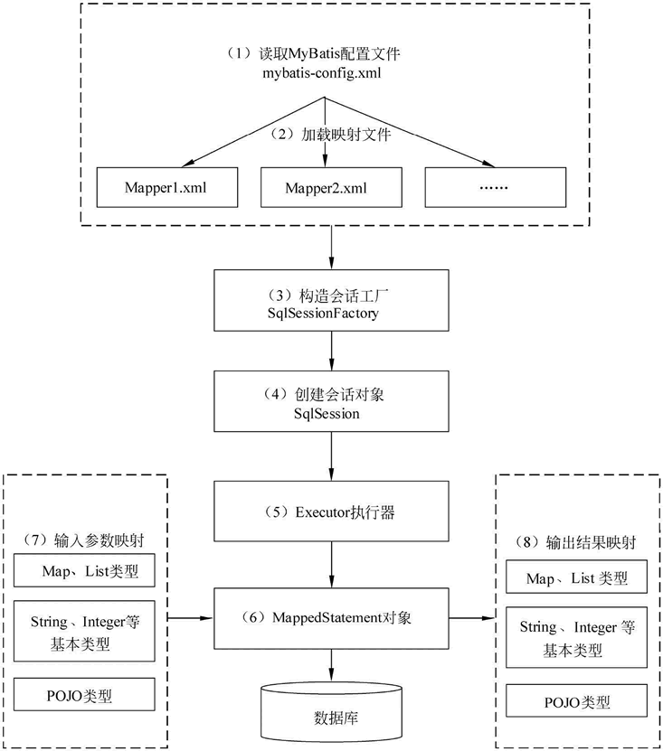
详细讲解：
注：这个过程在学习前记住，在学习中对照，在学习后回过头来再看一遍
MyBatis入门小程序
模拟场景：
根据id查询客户信息
准备：
数据库：
systop_crm.sql 提取码：carp
导入jar
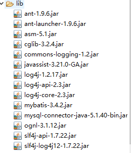
pojo类 com.systop.pojo.Customer.java
x1package com.systop.pojo;2import java.util.Date;3/**4 * 客户持久化类5 */6public class Customer {7 private Integer cust_id; // 客户编号8 private String cust_name; // 客户名称9 private Integer cust_user_id; // 负责人id10 private Integer cust_create_id; // 创建人id11 private String cust_source; // 客户信息来源12 private String cust_industry; // 客户所属行业13 private String cust_level; // 客户级别14 private String cust_linkman; // 联系人15 private String cust_phone; // 固定电话16 private String cust_mobile; // 移动电话17 private String cust_zipcode; // 邮政编码18 private String cust_address; // 联系地址19 private Date cust_createtime; // 创建时间 20 21 //查看数据22 23 public String toString() {24 return "Customer [cust_id=" + cust_id + ", cust_name=" + cust_name + ", cust_user_id=" + cust_user_id25 + ", cust_create_id=" + cust_create_id + ", cust_source=" + cust_source + ", cust_industry="26 + cust_industry + ", cust_level=" + cust_level + ", cust_linkman=" + cust_linkman + ", cust_phone="27 + cust_phone + ", cust_mobile=" + cust_mobile + ", cust_zipcode=" + cust_zipcode + ", cust_address="28 + cust_address + ", cust_createtime=" + cust_createtime + "]";29 }3031 public Customer() {32 }33 34 // getter和setter方法35 // ...36}日志配置文件 log4j.properties
81# Global logging configuration2log4j.rootLogger=ERROR, stdout3# MyBatis logging configuration...4log4j.logger.com.systop=DEBUG5# Console output...6log4j.appender.stdout=org.apache.log4j.ConsoleAppender7log4j.appender.stdout.layout=org.apache.log4j.PatternLayout8log4j.appender.stdout.layout.ConversionPattern=%5p [%t] - %m%nsql映射文件 com.systop.mapper.CustomerMapper.xml
101 2 4<!-- namespace 命名空间：全路径 -->5<mapper namespace="com.systop.mapper.CustomerMapper">6 <!-- 根据id查询客户信息 id必须写而且不能重复 -->7 <select id="findCustomerById" parameterType="Integer" resultType="com.systop.pojo.Customer">8 select * from customer where cust_id = #{id}9 </select>10</mapper>全局配置文件mybatis-config.xml
241 2 4<configuration>5 <!-- 配置环境信息，默认使用mysql数据源 -->6 <environments default="mysql">7 <!-- 定义了一个id为mysql的数据源信息 -->8 <environment id="mysql">9 <!-- 使用事务管理JDBC -->10 <transactionManager type="JDBC" />11 <!-- 数据库连接池 -->12 <dataSource type="POOLED">13 <property name="driver" value="com.mysql.jdbc.Driver"/>14 <property name="url" value="jdbc:mysql://localhost:3306/systop_crm"/>15 <property name="username" value="root"/>16 <property name="password" value="root"/>17 </dataSource>18 </environment>19 </environments>20 <!-- 导入映射文件 -->21 <mappers>22 <mapper resource="com/systop/mapper/CustomerMapper.xml"/>23 </mappers>24</configuration>编写运行类测试结果MybatisTest.java
291package com.systop.test;23import java.io.IOException;4import java.io.InputStream;56import org.apache.ibatis.io.Resources;7import org.apache.ibatis.session.SqlSession;8import org.apache.ibatis.session.SqlSessionFactory;9import org.apache.ibatis.session.SqlSessionFactoryBuilder;1011import com.systop.pojo.Customer;1213public class MybatisTest {1415 public static void main(String[] args) throws IOException {16 //1、读取mybatis-config.xml 加载了CustomerMapper.xml17 InputStream inputStream = Resources.getResourceAsStream("mybatis-config.xml");18 //2、构建SqlSessionFactory工厂19 SqlSessionFactory sqlSessionFactory = new SqlSessionFactoryBuilder().build(inputStream);20 //3、通过工厂创建出SqlSession对象21 SqlSession sqlSession = sqlSessionFactory.openSession();22 //4、执行sql语句23 Customer cust = sqlSession.selectOne("com.systop.mapper.CustomerMapper.findCustomerById", 14);24 System.out.println(cust);25 //5、关闭26 sqlSession.close();27 }2829}运行结果：
41DEBUG [main] - ==> Preparing: select * from customer where cust_id = ?2DEBUG [main] - ==> Parameters: 14(Integer)3DEBUG [main] - <== Total: 14Customer [cust_id=14, cust_name=小张, cust_user_id=null, cust_create_id=1, cust_source=7, cust_industry=3, cust_level=23, cust_linkman=小雪, cust_phone=010-88888887, cust_mobile=13848399998, cust_zipcode=100096, cust_address=北京昌平区西三旗, cust_createtime=Fri Apr 08 16:32:01 CST 2016]
SqlSessionFactory：Mybatis中十分重要的对象，他是单个数据库映射关系经过编译后的内存镜像，主要作用是创建SqlSession。
SqlSession：Mybatis中又一个十分重要的对象，他是应用程序和持久层之间执行交互操作的一个单线程对象，其重要作用是执行持久化操作。
181public class MyBatisUtils {2 //定义sqlSessionFactory对象3 private static SqlSessionFactory sqlSessionFactory = null;4 //初始化对象的值5 static {6 try {7 InputStream inputStream = Resources.getResourceAsStream("mybaits-config.xml");8 //2，根据配置文件构建SqlSession工厂类9 sqlSessionFactory = new SqlSessionFactoryBuilder().build(inputStream);10 } catch (Exception e) {11 e.printStackTrace();12 }13 }14 //定义获取session对象的方法15 public static SqlSession getSession() {16 return sqlSessionFactory.openSession();17 }18}181// 查询方法2T selectOne(String statement)3T selectOne(String statement, Object param)4List<E> selectList(String statement)5List<E> selectList(String statement, Object param)6List<E> selectList(String statement, Object param, RowBounds rows)7// 插入，方法8int insert(String statement)9int insert(String statement, Object param)10// 更新方法11int update(String statement)12int update(String statement, Object param)13// 删除方法14int delete(String statement)15int delete(String statement, Object param)16void commit() // 提交事务17void rollback() // 回滚事务18void close() // 关闭sqlSession对象
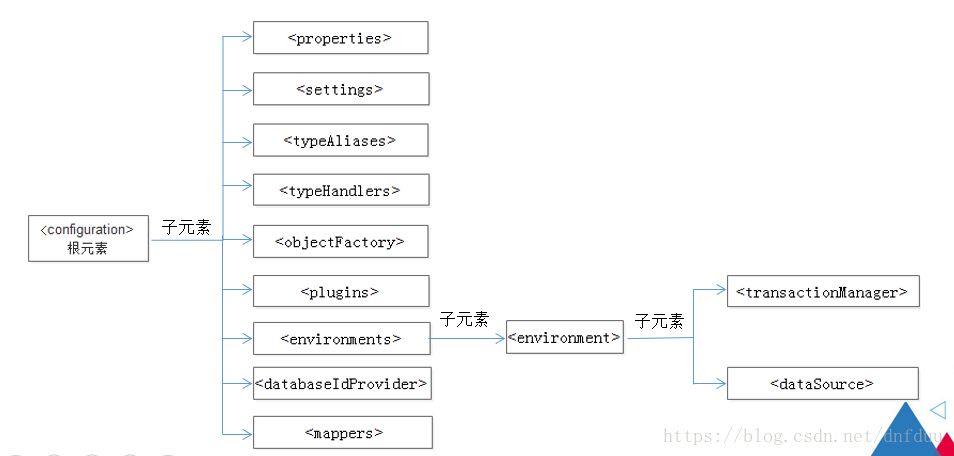
注：
是根元素其他元素都在根元素中配置 的子元素必须按照图中由上到下的顺序进行配置
是一个配置属性的元素，该元素通常用于将内部的配置外在化，即通过外部的配置来动态地替换内部定义的属性
在src目录下，添加一个名为db.properties的配置文件
41jdbc.driver=com.mysql.jdbc.Driver2jdbc.url=jdbc:mysql://localhost:3306/systop_crm3jdbc.username=root4jdbc.password=root在MyBatis配置文件mybatis-config.xml中配置
11<properties resource="db.properties"/>修改配置文件中数据库连接的信息
101<dataSource type="POOLED">2 <!-- 数据库驱动 -->3 <property name="driver" value="${jdbc.driver}"/>4 <!-- 连接数据库的url -->5 <property name="url" value="${jdbc.url}"/>6 <!-- 连接数据库的用户名 -->7 <property name="username" value="${jdbc.username}"/>8 <!-- 连接数据库的密码 -->9 <property name="password" value="${jdbc.password}"/>10</dataSource>完成上述配置之后，dataSource中的连接数据库的4个属性值将会由db.properties文件中对应的值来动态替换
元素主要用于改变MyBatis运行时的行为，例如开启二级缓存、开启延迟加载等。
| 设置参数 | 描述 | 有效值 | 默认值 |
|---|---|---|---|
| cacheEnabled | 该配置影响所有映射器中配置缓存的全局开关 | true|false | false |
| lazyLoadingEnabled | 延迟加载的全局开关。当开启时，所有关联对象都会延迟加载。在特定关联关系中可通过设置 fetchType 属性来覆盖该项的开关状态 | true|false | false |
| aggressiveLazyLoading | 当启用时，对任意延迟属性的调用会使带有延迟加载属性的对象完整加载；反之，每种属性将会按需加载 | true|false | true |
| multipleResultSetsEnabled | 是否允许单一语句返回多结果集（需要兼容驱动） | true|false | true |
| useColumnLabel | 使用列标签代替列名。不同的驱动会有不同的表现，具体可参考相关驱动文档或通过测试这两种不同的模式来观察所用驱动的结果 | true|false | true |
| useGeneratedKeys | 允许JDBC 支持自动生成主键，需要驱动兼容。如果设置为 true，则这个设置强制使用自动生成主键，尽管一些驱动不能兼容但仍可正常工作 | true|false | false |
| autoMappingBehavior | 指定 MyBatis 应如何自动映射列到字段或属性。NONE 表示取消自动映射；PARTIAL 表示只会自动映射，没有定义嵌套结果集和映射结果集；FULL 会自动映射任意复杂的结果集（无论是否嵌套） | NONE、PARTIAL、FULL | PARTIAL |
| defaultExecutorType | 配置默认的执行器。SIMPLE 是普通的执行器；REUSE 会重用预处理语句（prepared statements）；BATCH 执行器将重用语句并执行批量更新 | SIMPLE、REUSE、BATCH | SIMPLE |
| defaultStatementTimeout | 设置超时时间，它决定驱动等待数据库响应的秒数 | 任何正整数 | 没有设置 |
| mapUnderscoreToCamelCase | 是否开启自动驼峰命名规则映射 | true|false | false |
| jdbcTypeForNull | 当没有为参数提供特定的 JDBC 类型时，为空值指定 JDBC 类型。某些驱动需要指定列的 JDBC 类型，多数情况直接用一般类型即可，比如 NULL、VARCHAR 或 OTHER | NULL、VARCHAR 、 OTHER | OTHER |
使用方式：
171<settings>2 <setting name="cacheEnabled" value="true"/>3 <setting name="lazyLoadingEnabled" value="true"/>4 <setting name="multipleResultSetsEnabled" value="true"/>5 <setting name="useColumnLabel" value="true"/>6 <setting name="useGeneratedKeys" value="false"/>7 <setting name="autoMappingBehavior" value="PARTIAL"/>8 <setting name="autoMappingUnknownColumnBehavior" value="WARNING"/>9 <setting name="defaultExecutorType" value="SIMPLE"/>10 <setting name="defaultStatementTimeout" value="25"/>11 <setting name="defaultFetchSize" value="100"/>12 <setting name="safeRowBoundsEnabled" value="false"/>13 <setting name="mapUnderscoreToCamelCase" value="false"/>14 <setting name="localCacheScope" value="SESSION"/>15 <setting name="jdbcTypeForNull" value="OTHER"/>16 <setting name="lazyLoadTriggerMethods" value="equals,clone,hashCode,toString"/>17</settings>重要的有：
81<settings>2 <!-- 开启缓存 -->3 <setting name="cacheEnabled" value="true"/>4 <!-- 开启懒加载 -->5 <setting name="lazyLoadingEnabled" value="true"/>6 <!-- 开启驼峰命名法 -->7 <setting name="mapUnderscoreToCamelCase" value="true"/>8</settings>
元素用于为配置文件中的Java类设置以简单的名字，即设置别名
使用方式：
81<typeAliases>2 <!-- 扫描单个类 -->3 <typeAlias alias="customer" type="com.systop.pojo.Customer" />4 <!-- 扫描单个类 -->5 <typeAlias type="com.systop.pojo.Customer" />6 <!-- 扫描包 -->7 <typeAlias type="com.systop.pojo" />8</typeAliases>注：
- alisa属性的属性值customer，就是com.systop.pojo.Customer的自定义别名，它可以代替com.systop.pojo.Customer使用在任何位置
- 若是省略alias，则默认将类名首字母小写后的名称作为别ing
- 若是扫描包，则将包下所有pojo类以首字母小写后的非限定名作为它的别名
MyBatis在预处理语句（PreparedStatement）中设置一个参数或从结果集（ResultSet）中取出一个值时，都会用其框架内部注册了的typeHandler（类处理器）进行相关处理。typeHandler的作用就是将预处理语句中传入的参数从JavaType（Java类型）转换为jdbcType（JDBC类型），或者从数据库取出结果时将jdbcType转换为JavaType。
注：MyBatis框架提供了一些默认的类处理器，我们其实不用做任何更改，可以注册新的类处理器
使用方式：
61<typeHandlers>2 <!-- 注册一个类的类处理器 -->3 <typeHandler handler="com.systop.type.CustomtypeHandler" />4 <!-- 注册包中所有的类处理器 -->5 <typeHandler handler="com.systop.type" />6<typeHandlers/>MyBatis框架每次创建结果对象的新实例时，都会使用一个对象工厂（ObjectFactory）的实例来完成。MyBatis中默认的objectFactory的作用就是实例化目标类，它既可以通过默认构造方法实例化，也可以在参数映射存在的时候通过参数构造方法来实例化。
注：这个一般情况下也不用改
使用方法：
自定义一个工厂对象，需要实现ObjectFactory接口，或继承DefaultObjectFactory类
41public class MyObjectFactory extends DefaultObjectFactory{2 private static final long serialVersionUID = -4114845625429965832L;3 // 重新构造其他方法4}在配置文件中配置自定义的ObjectFactory
31<objectFactory type="com.systop.factory.MyObjectFactory">2 <propety name="name" value="MyObjectFactory">3<objectFactory />MyBatis允许在已映射语句执行过程中的某一点进行拦截调用，这种拦截调用是通过插件来实现的。plugins元素的作用就是配置用户所开发的插件。
注：加载新的插件可能会破坏MyBatis原有的核心模块
在配置文件中，environment元素用于对环境进行配置。MyBatis的环境配置实际上就是数据源的配置，我们可以通过environment元素配置多种数据源，即配置多种数据库。
使用方法
161<!-- 默认使用mysql数据源 -->2<environments default="mysql">3 <!-- mysql数据源配置 -->4 <environment id="mysql">5 <!-- 使用JDBC事务管理 --> 6 <transactionManager type="JDBC" />7 <!-- 配置数据源 -->8 <dataSource type="POOLED">9 <property name="driver" value="${jdbc.driver}"/>10 <property name="url" value="${jdbc.url}"/>11 <property name="username" value="${jdbc.username}"/>12 <property name="password" value="${jdbc.password}"/>13 </dataSource>14 </environment>15 ...16</environments>MyBatis框架提供了UNPOOLED、POOLED和JNDI三种数据源类型，这里只介绍POOLED的操作，其他配置请自行查询学习
在配置文件中，
元素用于指定MyBatis映射文件的位置
使用方法：
101<mappers>2 <!-- 使用类路径引入 常用 -->3 <mapper resource="com/systop/mapper/CustomerMapper.xml" />4 <!-- 使用包名引入 常用 -->5 <package name="com.systop.mapper" />6 <!-- 使用接口类引入 不常用 -->7 <mapper class="com.systop.mapper.CustomerMapper" />8 <!-- 使用文件路径引入 不用 -->9 <mapper url="file:///D:com/systop/mapper/CustomerMapper.xml" />10</mappers>561 2 4<configuration>5 <!-- 引入外部配置文件 -->6 <properties resource="db.properties" />7 8 <settings>9 <!-- 缓存：开 -->10 <setting name="cacheEnabled" value="true"/>11 <!-- 懒加载：开 -->12 <setting name="lazyLoadingEnabled" value="true"/>13 <!-- 驼峰命名法：开 -->14 <setting name="mapUnderscoreToCamelCase" value="true"/>15 </settings>1617 <typeAliases>18 <!-- 自定义别名 -->19 <typeAlias type="com.systop.pojo.Customer" alias="cust"/>20 </typeAliases>21 22 <!--<typeHandlers>23 24 <typeHandlers />-->25 26 <!--<objectFactory>27 28 <objectFactory />-->2930 <!--<plugins>31 32 </plugins>-->3334 <!-- 默认使用mysql数据源 -->35 <environments default="mysql">36 <!-- mysql数据源配置 -->37 <environment id="mysql">38 <!-- 使用JDBC事务管理 --> 39 <transactionManager type="JDBC" />40 <!-- 配置数据源 -->41 <dataSource type="POOLED">42 <property name="driver" value="${jdbc.driver}"/>43 <property name="url" value="${jdbc.url}"/>44 <property name="username" value="${jdbc.username}"/>45 <property name="password" value="${jdbc.password}"/>46 </dataSource>47 </environment>48 ...49 </environments>50 51 <mappers>52 <mapper resource="com/systop/mapper/CustomerMapper.xml"/>53 <!-- <package name="com.systop.mapper"/> -->54 </mappers>55 56</configuration>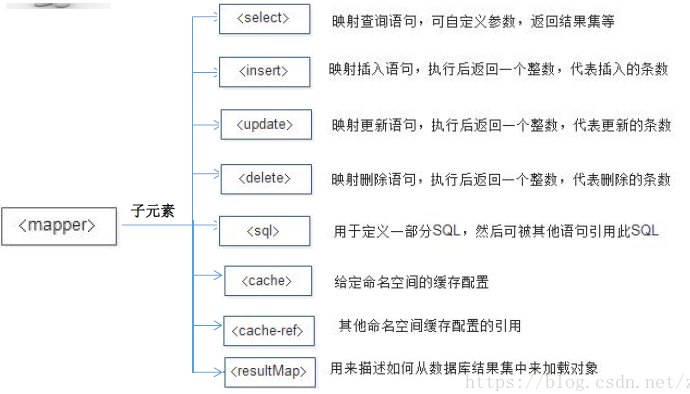
属性
| 属性 | 说 |
|---|---|
| id | 表示命名空间内唯一标识符，常与命名空间组合起来使用 |
| parameterType | 将传入该select语句的参数类型的完全限定名或别名 |
| resultType | 该条select语句将要返回的类型的完全限定名或别名 |
| resultMap | 外部resultMap的命名引用，不可和resultType同时使用 |
| flushCache | 设置为true时，则在任何时候只要语句被调用，都会导致本地缓存和二级缓存都被清空，默认为false。 |
| useCache | 设置为true时，将会导致本条语句的结果被二级缓存，默认为true |
| timeout | 驱动程序等待数据库返回请求结果的秒数，默认值为unset(依赖驱动) |
| fetchSize | 尝试影响驱动程序每次批量返回的结果行数和这个设置值相等，默认为unset(依赖驱动) |
| statementType | 值为STATEMENT、PREPARED、CALLABLE。默认值为PREPARED |
| resultSetType | 结果集的类型，值为FORWARD_ONLY、SCROLL_SENSITIVE、SCROLL_INSENSITIVE。默认为unset(依赖驱动) |
注：经常使得有id、parameterType、resultType、resultMap
使用方式：
41<select id="findCustomerById" paramaterType="Interger" 2 resultType="com.systop.pojo.Customer">3 select * from customer where cust_id = #{id}4</select>属性：
与select元素的属性大致一样，insert和update元素多了几种属性，重要的有keyProperty：（仅对insert和update有用）通常设置主键对应的属性。如果设置联合主键，可以在多个值之间用逗号隔开
使用方式：
131<insert id="insertCustomer" parameterType="com.systop.pojo.Customer" 2 keyProperty="cust_id" >3 insert into customer(cust_id, cst_name, cust_phone, cust_address)4 value(#{cust_id}, #{cst_name}, #{cust_phone}, #{cust_address})5</insert>6<update id="updateCustomer" parameterType="com.systop.pojo.Customer" 7 flushCache="true" keyProperty="cust_id">8 <!-- 更新语句 -->9</update>10<delete id="deleteCustomer" parameterType="Integer"11 flushCache="true">12 delete from customer where cust_id = #{id}13</delete>sql元素标签的作用是储存多次使用的sql语句字段，以减少代码的臃肿
使用方法：
101<sql id="customerComlums">2 cust_id,cust_name,cust_phone,cust_address3</sql>45<select id="findCustomerById" paramaterType="Interger" 6 resultType="com.systop.pojo.Customer">7 select <include refid="customerComlums" />8 from customer 9 where cust_id = #{id}10</select>上述代码是sql元素标签的简单使用方式
231<sql id="tablename">2 ${prefix}omter3</sql>4<!-- 定义要查询的表 -->5<sql id="someinclude">6 from7 <include tefid="${include_target}" />8</sql>9<!-- 定义查询列 -->10<sql id="customerComlums">11 cust_id,cust_name,cust_phone,cust_address12</sql>1314<select id="findCustomerById" paramaterType="Interger" 15 resultType="com.systop.pojo.Customer">16 select17 <include refid="customerComlums" />18 <include refid="someinclude">19 <property name="include_target" value="tablename" />20 <property name="prefix" value="cust" />21 </include>22 where cust_id = #{cust_id}23</select>resultMap元素表示结果映射集，是MyBatis中最重要也是最强大的元素。它的主要功能是定义映射规则、级联的更新以及定义类转换器等
resultMap元素中包含了一些子元素，它的元素结构大致如下：
141<!-- resultMap元素结构 -->2<resultMap type="" id="">3 <constructor> <!-- 类实例化时，用来注入结果到构造方法中 不常用 -->4 <idArg/> <!-- ID参数；标记结果作为ID 不常用 -->5 <arg/> <!-- 注入到构造方法的一个普通结果 不常用 -->6 </constructor>7 <id property="" column=""/> <!-- 用于表示哪一列是主键 常用 -->8 <result property="" column=""/> <!-- 注入到字段或JavaBean属性的普通结果 常用 -->9 <association property="" column="" javaType="" select=""/> <!-- 用于表的一对一关联 常用 -->10 <collection property="" column="" ofType="" select=""/> <!-- 用于表的一对多关联 常用 -->11 <discriminator javaType=""> <!-- 使用结果值来决定使用哪个结果映射 不常用 -->12 <case value="" /> <!-- 基于某些值的结果映射 不常用 -->13 </discriminator>14</resultMap>注：在后面MyBatis的关系映射中会专门讲它的使用
- property：传入pojo对象的属性名
- colum：传入数据库对应的字段名
- javaType：传入表外键对应的pojo类（全路径限定名或别名）
- ofType：传入表外键对应的pojo类（全路径限定名或别名）
- select：mybatis映射文件对应的查询语句
- association：用于表的一对一关联
- collection：用于表的一对多关联
元素
| 元素 | 说明 |
|---|---|
| if | 判断语句，用于单条件分支判断 |
| choose、when、otherwise | 相当于Java中的switch...case...defullt语句，用于多条件分支判断 |
| where、trim、set | 辅助元素，用于处理一些SQL拼装、特殊字符问题 |
| foreach | 循环语句，常用于in语句等列举条件中 |
| bind | 从OGNL表达式中创建一个变量，并将其绑定到上下文，常用于模糊查询的sql中 |
if元素
场景：根据客户姓名和地址组合条件查询客户信息列表
101<!-- 根据客户姓名和地址查询语句 -->2<select id="findCustomerByNameAndAddress" parameterType="cust" resultType="cust">3 select * from customer where 1=1 4 <if test="cust_name != null and cust_name != ''">5 and cust_name like concat('%',#{cust_name},'%')6 </if>7 <if test="cust_address != null and cust_address != ''">8 and cust_address = #{cust_address}9 </if>10</select>choose、when、otherwise元素
场景：当客户名字不为空，则使用名称查询，名字为空则使用地址查询，如果都为空则使用手机号查询
151<!-- 根据客户姓名、地址、手机号查询语句 -->2<select id="findCustomerByNameOrAddress" parameterType="cust" resultType="cust">3 select * from customer where 1=1 4 <choose>5 <when test="cust_name != null and cust_name != ''">6 and cust_name like concat('%',#{cust_name},'%')7 </when>8 <when test="cust_address != null and cust_address != ''">9 and cust_address = #{cust_address}10 </when>11 <otherwise>12 and cust_phone is not null13 </otherwise>14 </choose>15</select>where、trim元素
场景： 根据客户姓名和地址查询语句
121<!-- 根据客户姓名和地址查询语句 where -->2<select id="findCustomerByNameAndAddress" parameterType="cust" resultType="cust">3 select * from customer4 <where>5 <if test="cust_name != null and cust_name != ''">6 and cust_name like concat('%',#{cust_name},'%')7 </if>8 <if test="cust_address != null and cust_address != ''">9 and cust_address = #{cust_address}10 </if>11 </where>12</select>121<!-- 根据客户姓名和地址查询语句 trim -->2<select id="findCustomerByNameAndAddress" parameterType="cust" resultType="cust">3 select * from customer4 <trim prefix="where" prefixOverrides="and">5 <if test="cust_name != null and cust_name != ''">6 and cust_name like concat('%',#{cust_name},'%')7 </if>8 <if test="cust_address != null and cust_address != ''">9 and cust_address = #{cust_address}10 </if>11 </trim>12</select>set元素
场景：根据客户传参信息更新姓名，地址，电话三个信息
161<!-- 根据客户传参信息更新姓名，地址，电话三个信息 -->2<update id="updateCustomer" parameterType="cust">3 update customer4 <set>5 <if test="cust_name != null and cust_name != ''">6 cust_name = #{cust_name},7 </if>8 <if test="cust_address != null and cust_address != ''">9 cust_address = #{cust_address},10 </if>11 <if test="cust_phone != null and cust_phone != ''">12 cust_phone = #{cust_phone},13 </if>14 </set>15 where cust_id = #{cust_id}16</update>注：
- where元素在其内部if子语句判断为true时自动在前面拼接一个“where”，并将第一个判断为true的if子语句中的首字母and去除，若无and则不去除
- trim元素与where元素类似，当子语句判断为true时自动在前面拼接prefix的值，并去除prefixOverrides的值，若无则不去除
- set元素也是如此，当子语句判断为true时在前面拼接一个“set”，他不去除任何字符
forEach元素
情景：根据客户查询的多个id查询用户
81<!-- 根据多个客户id查询用户 -->2<select id="findCustomerByIds" parameterType="List" resultType="cust">3 select * from customer where cust_id in 4 <foreach item="cust_id" index="index" collection="list" 5 open="(" separator="," close=")">6 #{cust_id}7 </foreach>8</select>注：
- item：循环中当前元素的名称
- index：当前元素在集合的位置下标
- collection：参数类型，它可以是list、array、Map集合的键、pojo包装类中数组或集合类型的属性名等
- Open: 开始前添加的符号
- Close: 结束后添加的符号
- separator：各个元素的间隔符
bind元素
情景：根据客户模糊查询
51<!-- 根据客户模糊查询 -->2<select id="findCustomerByName" parameterType="cust" resultType="cust">3 <bind name="pattern_cust_name" value="'%'+cust_name+'%'" />4 select * from customer where cust_name like #{pattern_cust_name}5</select>在关系型数据库中，多表之间存在着三种关联关系，一对一、一对多和多对多
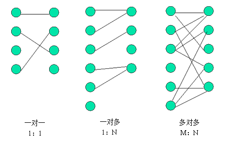
三种关联关系的具体说明如下：
通过数据库的表可以描述数据之间的关系，同样，在Java中，通过对象也可以进行关联关系描述：
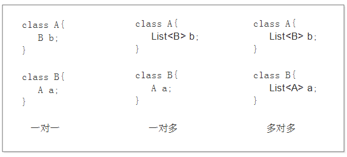
案例：在现实生活中，一对一关联关系是十分常见的。例如，一个人只能有一个身份证，同时一个身份证也只会对应一个人
resultMap元素中，包含了一个association子元素，MyBatis就是通过该元素来处理一对一关联关 系的。
在association元素中，通常可以配置以下属性:
81<!-- 嵌套查询 -->2<association property="card" column="card_id" javaType="IdCard"3 select="com.systop.mapper.IdCardMapper.findCodeById" />4<!-- 嵌套结果 -->5<association property="card" javaType="IdCard">6 <id property="id" column="card_id"/>7 <result property="code" column="code"/>8</association>代码：
数据库：
test.sql 提取码：carp
pojo类
121package com.systop.po;23public class IdCard {4 private Integer id;5 private String code;67 public String toString() {8 return "IdCard [id=" + id + ", code=" + code + "]";9 }1011 // ... 12}161package com.systop.po;23public class Person {4 private Integer id;5 private String name;6 private Integer age;7 private String sex;8 // 一对一的对象9 private IdCard card;1011 public String toString() {12 return "Person [id=" + id + ", name=" + name + ", age=" + age + ", "13 + "sex=" + sex + ", card=" + card + "]";14 }1516 // ...Mapper.xml
101 2 4<!-- 命名空间：完全路径 -->5<mapper namespace="com.systop.mapper.IdCardMapper">6 <!-- 根据Id查询身份证 -->7 <select id="findCodeById" parameterType="Integer" resultType="idCard">8 select * from tb_idcard where id = #{id}9 </select>10</mapper>431 2 4<!-- 命名空间：完全路径 -->5<mapper namespace="com.systop.mapper.PersonMapper">6 <!-- 嵌套查询 -->7 <!-- 结果集 -->8 <resultMap id="PersonAndCardResult1" type="person">9 <id property="id" column="id" />10 <result property="name" column="name" />11 <result property="age" column="age" />12 <result property="sex" column="sex" />13 <!-- 一对一 ：association使用select属性引入另外一个sql语句 -->14 <association property="card" column="card_id" javaType="IdCard"15 select="com.systop.mapper.IdCardMapper.findCodeById" />16 </resultMap>17 <!-- 根据Id查询人员信息 -->18 <select id="findPersonById" parameterType="Integer" 19 resultMap="PersonAndCardResult1">20 select * from tb_person where id=#{id}21 </select>22 23 <!-- 嵌套结果 -->24 <!-- 结果集 -->25 <resultMap id="PersonAndCardResult2" type="person">26 <id property="id" column="id" />27 <result property="name" column="name" />28 <result property="age" column="age" />29 <result property="sex" column="sex" />30 <!-- 一对一 ：association使用select属性引入另外一个sql语句 -->31 <association property="card" javaType="IdCard">32 <id property="id" column="card_id"/>33 <result property="code" column="code"/>34 </association>35 </resultMap>36 <!-- 根据Id查询人员信息 -->37 <select id="findPersonById" parameterType="Integer" 38 resultMap="PersonAndCardResult2">39 select p.*,i.code 40 from tb_person p,tb_idcard i 41 where p.card_id=i.id and p.id=#{id}42 </select>43</mapper>main类
61public static void main(String[] args) {2 SqlSession sqlSession = MyBatisUtils.getSession();3 Person person = sqlSession.selectOne("com.systop.mapper.PersonMapper.findPersonById",2);4 System.out.println(person);5 sqlSession.close();6}注：
- 在mybatis-config.xml文件中开启延迟加载，而MyBatis中的association元素和collection元素中都已默认配置了延迟加载属性，无需再做配置
- 如果使用嵌套结果查询，则无法使用延迟加载，故推荐使用嵌套查询
resultMap元素中，包含了一个collection子元素，MyBatis就是通过该元素来处理一对多关联关系的。collection子元素的属性大部分与association元素相同，但其还包含一个特殊属性--ofType 。
ofType：ofType属性与javaType属性对应，它用于指定实体对象中集合类属性所包含的元素类型。
81<!-- 方法1：嵌套查询 -->2<collection property="ordersList" column="id" ofType="Orders"3 select="com.systop.mapper.OrderMapper.selectOrders"/>4<!-- 方法2：嵌套结果 -->5<collection property="ordersList" ofType="Orders">6 <id property="id" column="orders_id" />7 <result property="number" column="number" />8</collection>多对多相当于双份的一对多也是使用resultMap元素
在实际项目开发中，多对多的关联关系也是非常常见的。以订单和商品为例，一个订单可以包含多种商品，而一种商品又可以属于多个订单。
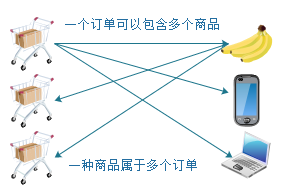
在数据库中，多对多的关联关系通常使用一个中间表来维护，中间表中的订单id作为外键参照订单表的id，商品id作为外键参照商品表的id。
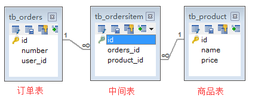
至此，MyBatis的学习就暂告一段落。
Spring是分层的JavaSE/EE full-stack（一站式）轻量级开源框架，以IoC（Inverse of Control 控制反转）和AOP（Aspect Oriented Programming 面向切面编程）为内核，使用基本的JavaBean来完成以前只可能由EJB完成的工作，取代了EJB的臃肿、低效的开发模式。
Spring具有简单、可测试和松耦合等特点。Spring不仅可以用于服务器端开发，也可以应用于任何Java应用的开发中。
非侵入式设计
Spring是一种非入侵式（non-invasive）框架，它可以使应用程序代码对框架的依赖最小
方便解耦、简化开发
Spring就是一个大工厂，可以将所有对象创建和依赖的关系维护，交给Spring管理
支持AOP
Spring提供面向切面编程，可以方便的实现对程序进行权限拦截、运行监控等功能
支持声明式事务处理
只需要通过配置就可以完成对事务的管理，而无需手动编程
方便程序测试
Spring对Junit4支持，可以通过注解方便的测试Spring程序
方便集成各种优秀框架
Spring不排斥各种优秀的开源框架，其内部提供了对各种优秀框架的直接支持（如：Struts、Hibernate、MyBatis等）
降低Java EE API的使用难度
Spring对JavaEE开发中非常难用的一些API（JDBC、JavaMail、远程调用等），都提供了封装，使这些API应用难度大大降低
Spring框架采用的是分层架构，它一系列的功能要素被分成20个模块
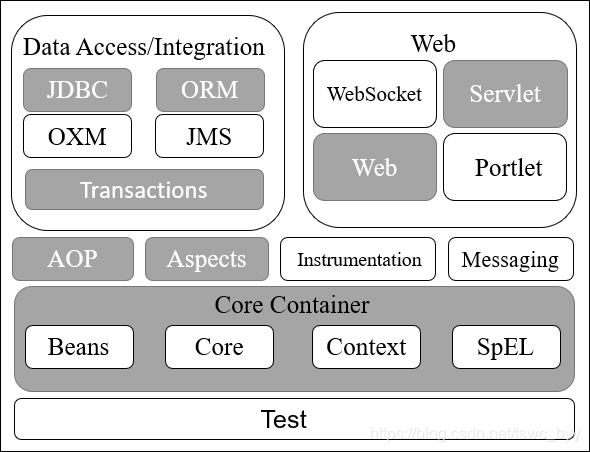
核心容器（Core Container）
数据访问/集成（Data Access/Integration）层
包括JDBC、DRM、JMS和Transaction模块，除Transaction模块之外都不重点涉及
Web层
AOP（Aspect Oriented Programming）模块
提供了面向切面编程实现，允许定义方法拦截和切入点，将代码按照功能进行分离，以降低耦合性
Aspects模块
提供了与AspectJ的集成功能，AspectJ是一个功能强大的面向切面框架
植入（Instrumentation）模块
消息传输（Messaging）
测试（Test）模块
jar包
spring-beans-4.3.6.RELEASE.jar
spring-context-4.3.6.RELEASE.jar
spring-core-4.3.6.RELEASE.jar
spring-expression-4.3.6.RELEASE.jar
commons-logging-1.2.jar
在src目录下创建一个applicationContext.xml
151 2<beans xmlns="http://www.springframework.org/schema/beans"3 xmlns:xsi="http://www.w3.org/2001/XMLSchema-instance"4 xsi:schemaLocation="http://www.springframework.org/schema/beans 5 http://www.springframework.org/schema/beans/spring-beans-4.3.xsd">6 <!-- 该文件是Spring管理对象的文件 -->7 8 <!-- 把UserDao类型对象交给Spring管理 -->9 <bean id="userDao" class="com.systop.ioc.UserDao"/>10 <!-- 把UserServiceImpl类型对象交给Spring管理 -->11 <bean id="userService" class="com.systop.ioc.UserService">12 <property name="userDao" ref="userDao" />13 <property name="age" value="20" />14 </bean>15</beans>Java类
71package com.systop.ioc;23public class UserDao{4 public void sayHi() {5 System.out.println("你好，Hello World");6 }7}281package com.systop.ioc;23public class UserService {4 //属性5 private UserDao userDao;6 private int age;7 8 9 public void say() {10 System.out.println("这是Service层逻辑");11 System.out.println("调用say方法:age="+age);12 System.out.println("====================");13 userDao.sayHi();14 }1516 public UserDao getUserDao() {17 return userDao;18 }19 public void setUserDao(UserDao userDao) {20 this.userDao = userDao;21 }22 public int getAge() {23 return age;24 }25 public void setAge(int age) {26 this.age = age;27 }28}281package com.systop.ioc;23import org.springframework.context.ApplicationContext;4import org.springframework.context.support.ClassPathXmlApplicationContext;56public class Test {7 public static void main(String[] args) {8 //传统实例化对象的方式9 UserDao userDao = new UserDao();10 userDao.sayHi();11 //Spring方式来实例化对象12 ApplicationContext app = 13 new ClassPathXmlApplicationContext("applicationContext.xml");14 UserDao userDao = (UserDao)app.getBean("userDao");15 userDao.sayHi();16 17 //多层关系 传统调用18 UserService userService = new UserService();19 userService.setUserDao(userDao);20 userService.setAge(12);21 userService.say();22 //多层关系 Spring方式来实例化对象23 ApplicationContext app = 24 new ClassPathXmlApplicationContext("applicationContext.xml");25 UserService userService = (UserService)app.getBean("userService");26 userService.say();27 }28}注：上述程序中出现了工厂模式创建对象，控制反转，依赖注入
Spring框架的主要功能是通过其核心容器来实现的，我们有必要对其核心容器有一定的了解。Spring框架提供了两种核心武器，分别为BeanFactory（对象工厂）和ApplicationContext（全局上下文）
BeanFactory
BeanFactory由org.springframework.beans.factory.BeanFactory接口定义，是基础类型的Ioc容器（控制反转），它提供了完整的IoC服务支持。简单来说，Beanfactory就是一个管理Bean的工厂，他主要负责初始化各种Bean，并调用它们的生命周期。
21BeanFactory beanFactory = 2 new XmlBeanFactory(new FileSystemResource("F:/applicationContext.xml"));注：参数是文件系统路径（非项目系统路径）
这种加载方式在开发中并不多用（老得不能再老的系统），读者了解即可
ApplicationContext
ApplicationContext也是BeanFactory的子接口，称为应用上下文，是另外一种常用的Spring核心容器。他由org.springframewokr.context.AppliactionContext接口定义，他不仅仅包含了BeanFactory的所有功能，还添加了对国际化、资源访问、事件传播等方面的技术。
31// 1、通过ClassPathXmlApplicationContext创建2ApplicationContext app = 3 new ClassPathXmlApplicationContext("applicationContext.xml")注：文件在项目中的绝对路径
31// 2、通过FileSystemXmlApplicationContext创建2ApplicationContext app = 3 new FileSystemXmlApplicationContext("F:/applicationContext.xml");注：参数是文件系统路径
Spring获取Bean的实例通常采用以下两种方法：
Object getBean(String name) ：根据容器中的Bean的id或name来获取指定的Bean，获取值后需要进行数据类型转换。<T> T getBean(Class<T> requiredType) ：根据累的类型来获取Bean的实例。此方法为泛型方法，因此在获取Bean之后不需要进行强制类型转换。IOC-Inversion of Control，译为控制反转，是一种遵循依赖倒置原则的代码设计思想。
所谓依赖倒置，就是把原本的高层建筑依赖底层建筑“倒置”过来，变成底层建筑依赖高层建筑。高层建筑决定需要什么，底层去实现这样的需求，但是高层并不用管底层是怎么实现的。这样就不会出现前面的“牵一发动全身”的情况。 而控制反转就是把传统程序中需要实现对象的创建、代码的依赖，反转给一个专门的"第三方"即容器来实现，即将创建和查找依赖对象的控制权交给容器，由容器将对象进行组合注入，实现对象与对象的松耦合，便于功能的复用，使程序的体系结构更灵活。
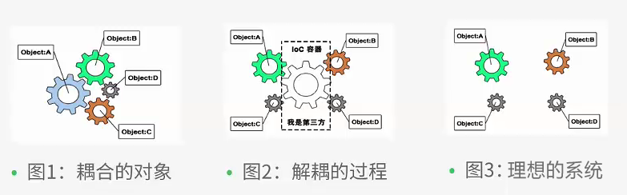
DI-Dependency Injection,译为依赖注入，实际上是对Ioc的另一种称呼。2004年，大师级人物Martin Fowler为“控制反转”取了一个更合适的名字“依赖注入”。给出了实现IOC的方法：注入。所谓依赖注入，就是由IOC容器在运行期间，动态地将某种依赖关系注入到对象之中。
当某个Java对象（调用者）需要调用另一个Java对象（被调用者，即被依赖对象）时，在传统模式下，调用者通常会采用“new 被调用者”的代码方式来创建对象，这种方式会导致调用者与被调用者之间的耦合度增加，不利于后期项目的升级和维护。
在使用Spring框架之后，对象的实例不再由调用者来创建，而是由Spring容器来创建，Spring容器会负责控制程序之间的关系，而不是由调用者的程序代码直接控制。这样控制权由应用代码转移到了Spring容器，控制权发生了反转，这就是Spring的控制反转。
从Spring容器的角度来看，Spring容器负责将被依赖对象赋值给调用者的成员变量，这相当于为调用者注入了它依赖的实例，这就是Spring的依赖注入。
理解IOC和DI的关键：
--控制反转，谁控制了谁？
--IOC容器控制了对象
--控制了什么？
--控制了外部资源的获取（对象，文件等）
--哪些方面的控制被反转了？
--获得被依赖对象（被调用者）的过程被反转了。
--依赖注入，谁依赖谁？
--程序依赖IOC容器
--为什么需要依赖？
--程序需要IOC容器来提供外部资源
--谁注入谁？
--IOC容器向程序注入
--注入了什么？
--注入某个对象所需要的外部资源。
依赖注入(DI)和控制反转(IOC)是从不同的角度的描述的同一件事情，就是指通过引入IOC容器，利用依赖关系注入的方式，实现对象之间的解耦。
依赖注入的实现方式
依赖注入的实现作用就是在使用Spring框架的时候，动态地将其所依赖的对象注入Bean组件中
setter方法注入
通过调用无参构造器或无参静态工厂实例化Bean后，调用该Bean的setter方法来实现
构造方法注入
通过调用有参构造方法来实现
在上面入门程序中userService就是通过setter方法注入的
注：在需要依赖注入的Bean内必须要创建setter方法或有参构造
Spring可以被看作一个大型工厂，这个工厂的作用就是生产和管理Spring容器中的Bean对象
| id | 是一个Bean的唯一标识符，Spring容器对Bean的配置、管理都通过该属性来完成 |
| name | Spring容器也可以通过此属性来管理，name属性可以为Bean指定多个名称，名称之间用逗号隔开 |
| class | 该属性指定了Bean的具体实现类，它必须全限定名：包+类名 |
| scope | 用来定义Bean的实例作用域，singleton（单例）,prototype（原型），request，session，global Session、application和websocket，默认值为：singleton |
| constructor-arg | Bean元素的子元素，用于实现Bean的构造参数传递注入值 |
| property | Bean元素的子元素，用于实现Bean的Setter注入时设置的属性 |
| ref | constructor-arg、property属性，用于给某个属性赋值（引用类的值） |
| value | constructor-arg、property属性，用于给某个属性赋值（简单类型的值） |
| list | 用于封装List或数组类型的依赖注入 |
| set | 用于封装Set类型的依赖注入 |
| map | 用于封装Map类型的依赖注入 |
| entry | map元素的子元素，用于设置一个键值对。其key，ref或value |
注：重要的属性有id、class、scope、property、ref、value
121 2<beans xmlns="http://www.springframework.org/schema/beans" 3 xmlns:xsi="http://www.w3.org/2001/XMLSchema-instance" 4 xsi:schemaLocation="http://www.springframework.org/schema/beans 5 http://www.springframework.org/schema/beans/spring-beans-4.3.xsd">6 <bean id="bean1" class="com.systop.test.Bean1" scope="prototype">7 <property name="" value=""/>8 </bean>9 <bean id="bean2" class="com.systop.test.Bean2">10 <property name="" ref="bean1"/>11 </bean>12</beans>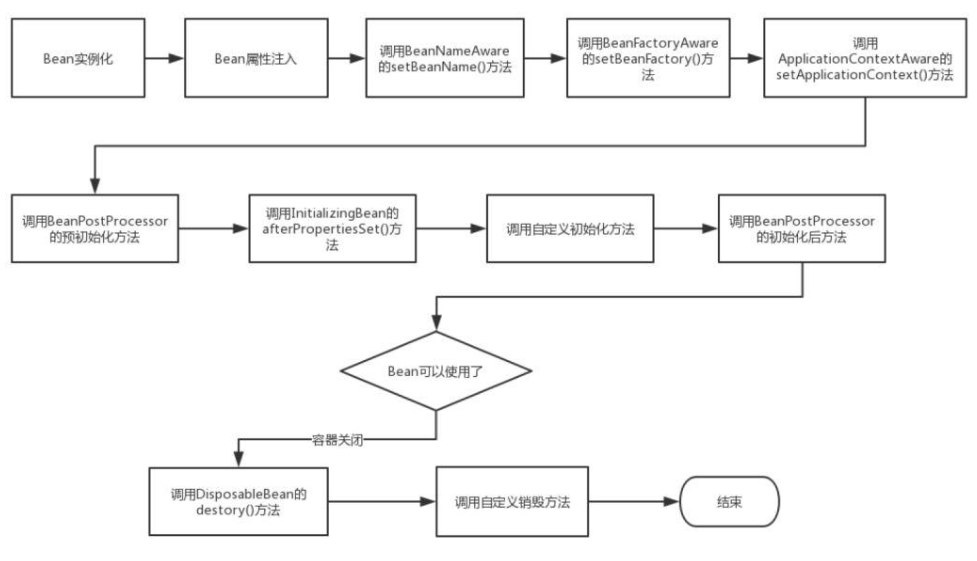
注：可以先了解，不用太过深究
我们在了解了Xml配置文件装配Bean方式，下面我来介绍一种注解装配方式
注：
- @Component：可以应用在pojo类、dao层、service层、controller层
- @Repository：应用在Dao层；@Service：应用在Service层；@Controller：应用在Controller层
- @Autowired：应用在类的属性值上，它会自动匹配类型完成Bean的装配
- @Resource：@Autowired是自动，@Resource是手动配置
配置文件：applicationContext.xml
131 2<beans xmlns="http://www.springframework.org/schema/beans"3 xmlns:xsi="http://www.w3.org/2001/XMLSchema-instance"4 xmlns:context="http://www.springframework.org/schema/context"5 xsi:schemaLocation="http://www.springframework.org/schema/beans 6 http://www.springframework.org/schema/beans/spring-beans-4.3.xsd7 http://www.springframework.org/schema/context 8 http://www.springframework.org/schema/context/spring-context-4.3.xsd">9 <!-- 使用context命名空间，在配置文件中开启相应的注解 -->10 <context:annotation-config />11 <!-- 定义扫包的范围 -->12 <context:component-scan base-package="com.systop.annotation"/>13</beans>导入jar：spring-aop-4.3.6.RELEASE.jar
java代码
51package com.systop.annotation;23public interface UserDao {4 public void save();5}121package com.systop.annotation;23import org.springframework.stereotype.Repository;45("userDao")6public class UserDaoImpl implements UserDao {78 9 public void save() {10 System.out.println("userdao......save方法");11 }12}51package com.systop.annotation;23public interface UserService {4 public void save();5}171package com.systop.annotation;23import org.springframework.beans.factory.annotation.Autowired;4import org.springframework.stereotype.Service;56("userService")7public class UserServiceImpl implements UserService{89 10 private UserDao userDao;11 12 13 public void save() {14 System.out.println("userService.......save方法");15 userDao.save();16 }17}181package com.systop.annotation;23import javax.annotation.Resource;45import org.springframework.beans.factory.annotation.Autowired;6import org.springframework.stereotype.Component;78("userController")9public class UserController {10 11 (name="")12 private UserService userService;13 14 public void save() {15 System.out.println("controller。。。。。。。。。save方法");16 userService.save();17 }18}141package com.systop.annotation;23import org.springframework.context.ApplicationContext;4import org.springframework.context.support.ClassPathXmlApplicationContext;56public class Test {7 public static void main(String[] args) {8 String path = "com/systop/annotation/applicationContext.xml";9 ApplicationContext app = new ClassPathXmlApplicationContext(path);10 UserController userController = 11 (UserController)app.getBean("userController");12 userController.save();13 }14}注：这是注解类的大致应用方式
AOP（Aspect Oriented Programming）称为面向切面编程，AOP采取横向抽取机制，将分散各个方法中的重复代码提取出来，然后在程序编译或运行时，再将这些提取出来的代码应用到需要执行的地方。
现在Java流行的AOP：Spring AOP 和 AspectJ
术语：
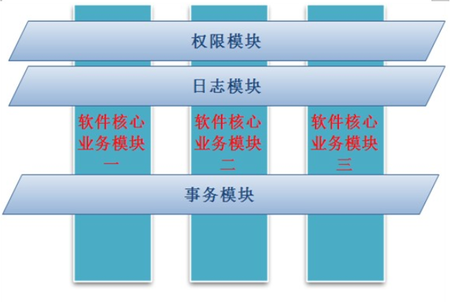
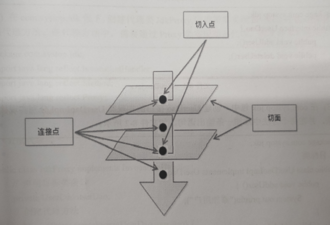
Aop虽然十分重要，但我们不在此详细讲解代买的实现，只说明它的操作理念
事务是指是程序中一系列严密的逻辑操作，而且所有操作必须全部成功完成，否则在每个操作中所作的所有更改都会被撤消。可以通俗理解为：就是把多件事情当做一件事情来处理，好比大家同在一条船上，要活一起活，要完一起完 。
事物的四个特性：
PlatformTransactionManager：Spring提供的事务管理器，主要作用管理事务、该接口提供3个方法：
TransactionDefinition：事务定义描述的对象，该接口定义了事务的规则，并提供了获取事务相关信息的方法
事务的传播形式：
PROPAGATION_REQUIRED （required） ：如果当前没有事务，则开启一个新事务，如果当前有事务，则把该方法加入到已有事务中。（注意：增删改会用该策略）
PROPAGATION_SUPPORTS (supports) ：如果当前方法有事务，则加入，如果没有则不开启新事务（注意：查询会用该策略）
参数出了上述两个，还有5种自行查找
TransactionStatus：事务的状态，它描述了某一个时间点上事务的状态信息。
事务管理的方式
注：编程式在SpringMVC中不作为重点
例：编写一个简略的银行转账系统
所用的jar包：
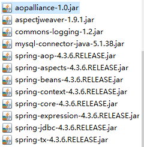
基于XML配置的声明式事务
applicationContext.xml
741 2<beans xmlns="http://www.springframework.org/schema/beans"3 xmlns:xsi="http://www.w3.org/2001/XMLSchema-instance" 4 xmlns:aop="http://www.springframework.org/schema/aop"5 xmlns:tx="http://www.springframework.org/schema/tx" 6 xmlns:context="http://www.springframework.org/schema/context"7 xsi:schemaLocation="http://www.springframework.org/schema/beans 8 http://www.springframework.org/schema/beans/spring-beans-4.3.xsd9 http://www.springframework.org/schema/aop10 http://www.springframework.org/schema/aop/spring-aop-4.3.xsd11 http://www.springframework.org/schema/context12 http://www.springframework.org/schema/context/spring-context-4.3.xsd13 http://www.springframework.org/schema/tx14 http://www.springframework.org/schema/tx/spring-tx-4.3.xsd">15 16 <!-- 1、数据源id固定名字不能写错dataSource -->17 <bean id="dataSource" class="org.springframework.jdbc.datasource.DriverManagerDataSource">18 <property name="driverClassName" value="com.mysql.jdbc.Driver" />19 <!-- 改数据库，用户名和密码 -->20 <property name="url" value="jdbc:mysql://localhost:3306/test" />21 <property name="username" value="root" />22 <property name="password" value="root" />23 </bean>24 25 <!-- 2、Spring的JDBC模板 -->26 <bean id="jdbcTemplate" class="org.springframework.jdbc.core.JdbcTemplate">27 <!-- 注入属性：数据源 -->28 <property name="dataSource" ref="dataSource" />29 </bean>30 31 <!-- 3 、 定义Bean对象CardDao -->32 <bean id="cardDao" class="com.systop.dao.impl.CardDaoImpl">33 <property name="jdbcTemplate" ref="jdbcTemplate"/>34 </bean>35 36 <bean id="cardService" class="com.systop.service.impl.CardServiceImpl">37 <property name="cardDao" ref="cardDao"/>38 </bean>39 40 <!-- 事务管理器 -->41 <bean id="transactionManager" class="org.springframework.jdbc.datasource.DataSourceTransactionManager">42 <property name="dataSource" ref="dataSource" />43 </bean>44 45 <!-- 通知：对事务进行增强（通知），需要编写对切入点和具体执行事务细节 -->46 <!-- id:唯一标识,transaction-manager:指定事务管理器 -->47 <tx:advice id="txAdvice" transaction-manager="transactionManager">48 <tx:attributes>49 <!-- name:"find*"是指以find开头的所有方法都加这个事务 -->50 <!-- propagation:"SUPPORTS"/"REQUIRED"指定事务传播行为 -->51 <!-- isolation:指定事务隔离级别 -->52 <!-- read-only:"true"/"false"指定事务是否为只读 -->53 <tx:method name="find*" propagation="SUPPORTS" read-only="true"/>54 <tx:method name="select*" propagation="SUPPORTS" read-only="true"/>55 <tx:method name="add*" propagation="REQUIRED" isolation="DEFAULT" read-only="false"/>56 <tx:method name="save*" propagation="REQUIRED" isolation="DEFAULT" read-only="false"/>57 <tx:method name="insert*" propagation="REQUIRED" isolation="DEFAULT" read-only="false"/>58 <tx:method name="update*" propagation="REQUIRED" isolation="DEFAULT" read-only="false"/>59 <tx:method name="delete*" propagation="REQUIRED" isolation="DEFAULT" read-only="false"/>60 <tx:method name="remove*" propagation="REQUIRED" isolation="DEFAULT" read-only="false"/>61 <tx:method name="transfer" propagation="REQUIRED" isolation="DEFAULT" read-only="false"/>62 </tx:attributes>63 </tx:advice>6465 <!-- 编写aop，让spring自动对目标生成代理，需要使用AspectJ的表达式 -->66 <aop:config>67 <!-- 切入点 -->68 <!-- expression:execution(* com.systop.service.impl.*.*(..))69 第一个星代表所有返回类型，第二个参数为com.systop.service.impl路径下的所有类的所有方法，无所谓参数类型 -->70 <aop:pointcut expression="execution(* com.systop.service.impl.*.*(..))" id="txPointCut"/>71 <!-- 切面：将切入点和通知整合 -->72 <aop:advisor advice-ref="txAdvice" pointcut-ref="txPointCut"/>73 </aop:config>74</beans>上述配置文件我们操作了
配置数据源
配置JDBC模版
配置事务管理器Bean
配置支持事务的方法和事务传播行为、隔离级别和是否为只读
- 编写aop，生成代理
注：代理依赖通知，通知依赖事务管理器，事务管理器依赖数据源
com.systop.dao.CardDao.java
81package com.systop.dao;23public interface CardDao {4 5 public int changeMoney(String userName, int money);6 7 public boolean findUser(String userName);8}com.systop.dao.impl.CardDaoImpl.java
381package com.systop.dao.impl;23import java.util.List;45import org.springframework.jdbc.core.JdbcTemplate;67import com.systop.dao.CardDao;89public class CardDaoImpl implements CardDao {1011 // spring框架自带的数据库操作对象12 private JdbcTemplate jdbcTemplate;13 14 15 public int changeMoney(String userName, int money) {16 String sql = "update card set money = money + ? where username = ?";17 int i = this.jdbcTemplate.update(sql, money, userName);18 return i;19 }2021 22 public boolean findUser(String userName) {23 String sql = "select * from card where username = ?";24 List list = this.jdbcTemplate.queryForList(sql, userName);25 if (list != null && list.size() > 0) {26 return true;27 } else {28 return false;29 }30 }3132 public JdbcTemplate getJdbcTemplate() {33 return jdbcTemplate;34 }35 public void setJdbcTemplate(JdbcTemplate jdbcTemplate) {36 this.jdbcTemplate = jdbcTemplate;37 }38}com.systop.service.CardService.java
61package com.systop.service;23public interface CardService {4 5 public void transfer(String userOut, String userIn, int money);6}com.systop.service.impl.CardServiceImpl.java
501package com.systop.service.impl;23import org.springframework.transaction.annotation.Propagation;4import org.springframework.transaction.annotation.Transactional;56import com.systop.dao.CardDao;7import com.systop.service.CardService;8/**9 * 业务逻辑层10 * @author Administrator11 *12 */13public class CardServiceImpl implements CardService {1415 private CardDao cardDao;16 17 //银行转账的方法18 19 public void transfer(String userOut, String userIn, int money) {20 try {21 //检查用户22 boolean result1 = cardDao.findUser(userOut);23 boolean result2 = cardDao.findUser(userIn);24 //判断结果25 if (result1 == false) {26 System.out.println("用户："+userOut+"不存在！");27 } else if (result2 == false) {28 System.out.println("用户："+userIn+"不存在！");29 } else {30 //真正的转账31 cardDao.changeMoney(userOut, -money);32 // 用1/0来作为错误测试事务33 // int i = 1 / 0;34 cardDao.changeMoney(userIn, money);35 System.out.println("转账成功");36 }37 } catch (Exception e) {38 e.printStackTrace();39 // try catch将错误捕获，所以我们需要抛出一个新的错误40 throw new RuntimeException("xxxxx");41 }42 }4344 public CardDao getCardDao() {45 return this.cardDao;46 }47 public void setCardDao(CardDao cardDao) {48 this.cardDao = cardDao;49 }50}com.systop.test.Test.java
161package com.systop.test;23import org.springframework.context.ApplicationContext;4import org.springframework.context.support.ClassPathXmlApplicationContext;56import com.systop.service.CardService;78public class Test {9 public static void main(String[] args) {10 ApplicationContext app = new ClassPathXmlApplicationContext("applicationContext.xml");11 12 CardService cardService = (CardService)app.getBean("cardService");13 14 cardService.transfer("Tom", "Jack", 1000);15 }16}基于Annotation注解方式的声明式注解
applicationContext.xml
461 2<beans xmlns="http://www.springframework.org/schema/beans"3 xmlns:xsi="http://www.w3.org/2001/XMLSchema-instance" 4 xmlns:aop="http://www.springframework.org/schema/aop"5 xmlns:tx="http://www.springframework.org/schema/tx" 6 xmlns:context="http://www.springframework.org/schema/context"7 xsi:schemaLocation="http://www.springframework.org/schema/beans 8 http://www.springframework.org/schema/beans/spring-beans-4.3.xsd9 http://www.springframework.org/schema/aop10 http://www.springframework.org/schema/aop/spring-aop-4.3.xsd11 http://www.springframework.org/schema/context12 http://www.springframework.org/schema/context/spring-context-4.3.xsd13 http://www.springframework.org/schema/tx14 http://www.springframework.org/schema/tx/spring-tx-4.3.xsd">15 16 <!-- 1、数据源id固定名字不能写错dataSource -->17 <bean id="dataSource" class="org.springframework.jdbc.datasource.DriverManagerDataSource">18 <property name="driverClassName" value="com.mysql.jdbc.Driver" />19 <property name="url" value="jdbc:mysql://localhost:3306/test" />20 <property name="username" value="root" />21 <property name="password" value="root" />22 </bean>23 24 <!-- 2、Spring的JDBC模板 -->25 <bean id="jdbcTemplate" class="org.springframework.jdbc.core.JdbcTemplate">26 <!-- 注入属性：数据源 -->27 <property name="dataSource" ref="dataSource" />28 </bean>29 30 <!-- 3 、 定义Bean对象CardDao -->31 <bean id="cardDao" class="com.systop.dao.impl.CardDaoImpl">32 <property name="jdbcTemplate" ref="jdbcTemplate"/>33 </bean>34 35 <bean id="cardService" class="com.systop.service.impl.CardServiceImpl">36 <property name="cardDao" ref="cardDao"/>37 </bean>38 39 <!-- 事务管理器 -->40 <bean id="transactionManager" class="org.springframework.jdbc.datasource.DataSourceTransactionManager">41 <property name="dataSource" ref="dataSource" />42 </bean>43 44 <!-- 开启注解 -->45 <tx:annotation-driven transaction-manager="transactionManager"/>46</beans>com.systop.service.impl.CardServiceImpl.java
511package com.systop.service.impl;23import org.springframework.transaction.annotation.Propagation;4import org.springframework.transaction.annotation.Transactional;56import com.systop.dao.CardDao;7import com.systop.service.CardService;8/**9 * 业务逻辑层10 * @author Administrator11 *12 */13public class CardServiceImpl implements CardService {1415 private CardDao cardDao;16 17 //银行转账的方法18 19 (propagation=Propagation.REQUIRED,readOnly=false)20 public void transfer(String userOut, String userIn, int money) {21 try {22 //检查用户23 boolean result1 = cardDao.findUser(userOut);24 boolean result2 = cardDao.findUser(userIn);25 //判断结果26 if (result1 == false) {27 System.out.println("用户："+userOut+"不存在！");28 } else if (result2 == false) {29 System.out.println("用户："+userIn+"不存在！");30 } else {31 //真正的转账32 cardDao.changeMoney(userOut, -money);33 // 用1/0来作为错误测试事务34 // int i = 1 / 0;35 cardDao.changeMoney(userIn, money);36 System.out.println("转账成功");37 }38 } catch (Exception e) {39 e.printStackTrace();40 // try catch将错误捕获，所以我们需要抛出一个新的错误41 throw new RuntimeException("xxxxx");42 }43 }4445 public CardDao getCardDao() {46 return this.cardDao;47 }48 public void setCardDao(CardDao cardDao) {49 this.cardDao = cardDao;50 }51}使用注解方式，只需在配置文件中开启注解，在service层的类或方法上添加注解即可
使用注解方式减少了配置文件的代码量，增加了方法添加事务的灵活性，但增加注解配置次数，提高了代码量
MVC(Model View Controller)是一种软件设计的框架模式，它采用模型(Model)-视图(View)-控制器(controller)的方法把业务逻辑、数据与界面显示分离。把众多的业务逻辑聚集到一个部件里面，当然这种比较官方的解释是不能让我们足够清晰的理解什么是MVC的。用通俗的话来讲，MVC的理念就是把数据处理、数据展示(界面)和程序/用户的交互三者分离开的一种编程模式。
优点：
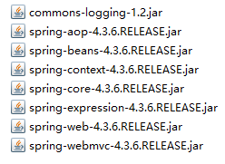
web.xml
331 2<web-app xmlns:xsi="http://www.w3.org/2001/XMLSchema-instance"3 xmlns="http://xmlns.jcp.org/xml/ns/javaee"4 xsi:schemaLocation="http://xmlns.jcp.org/xml/ns/javaee http://xmlns.jcp.org/xml/ns/javaee/web-app_3_1.xsd"5 id="WebApp_ID" version="3.1">6 <display-name>ch</display-name>7 <!-- 配置前端过滤器 -->8 <servlet>9 <servlet-name>springmvc</servlet-name>10 <servlet-class>org.springframework.web.servlet.DispatcherServlet</servlet-class>11 <!-- 初始化springMVC时加载的配置文件 -->12 <init-param>13 <param-name>contextConfigLocation</param-name>14 <param-value>15 classpath:springmvc-config.xml16 </param-value>17 </init-param>18 <!-- 项目启动就开始加载servlet -->19 <load-on-startup>1</load-on-startup>20 </servlet>21 <servlet-mapping>22 <servlet-name>springmvc</servlet-name>23 <url-pattern>/</url-pattern>24 </servlet-mapping>25 <welcome-file-list>26 <welcome-file>index.html</welcome-file>27 <welcome-file>index.htm</welcome-file>28 <welcome-file>index.jsp</welcome-file>29 <welcome-file>default.html</welcome-file>30 <welcome-file>default.htm</welcome-file>31 <welcome-file>default.jsp</welcome-file>32 </welcome-file-list>33</web-app>springmvc-config.xml
321 2<beans xmlns="http://www.springframework.org/schema/beans"3 xmlns:xsi="http://www.w3.org/2001/XMLSchema-instance" 4 xmlns:p="http://www.springframework.org/schema/p"5 xmlns:context="http://www.springframework.org/schema/context"6 xmlns:mvc="http://www.springframework.org/schema/mvc" 7 xmlns:task="http://www.springframework.org/schema/task"8 xsi:schemaLocation="http://www.springframework.org/schema/beans 9 http://www.springframework.org/schema/beans/spring-beans-4.2.xsd 10 http://www.springframework.org/schema/context 11 http://www.springframework.org/schema/context/spring-context-4.2.xsd 12 http://www.springframework.org/schema/mvc 13 http://www.springframework.org/schema/mvc/spring-mvc-4.2.xsd 14 http://www.springframework.org/schema/task 15 http://www.springframework.org/schema/task/spring-task-4.2.xsd">16 17 <!-- 开启注解 -->18 <context:annotation-config />19 20 <!-- 扫描包 -->21 <context:component-scan base-package="com.systop.controller" />22 23 <!-- 视图解析器-->24 <bean25 class="org.springframework.web.servlet.view.InternalResourceViewResolver">26 <!-- 配置从项目根目录到指定目录一端路径 ,建议指定浅一点的目录 -->27 <property name="prefix" value="/WEB-INF/jsp/"></property>28 <!-- 文件的后缀名 -->29 <property name="suffix" value=".jsp"></property>30 </bean>31 32</beans>com.systop.pojo.User.java
251package com.systop.pojo;23import org.springframework.stereotype.Component;45public class User {7 private String username;8 private String password;9 10 public User() {11 }12 13 public String getUsername() {14 return username;15 }16 public void setUsername(String username) {17 this.username = username;18 }19 public String getPassword() {20 return password;21 }22 public void setPassword(String password) {23 this.password = password;24 }25}com.systop.controller.TestController.java
661package com.systop.controller;23import javax.servlet.http.HttpServletRequest;4import javax.servlet.http.HttpSession;56import org.springframework.stereotype.Controller;7import org.springframework.web.bind.annotation.GetMapping;8import org.springframework.web.bind.annotation.PathVariable;9import org.springframework.web.bind.annotation.PostMapping;10import org.springframework.web.bind.annotation.RequestMapping;11import org.springframework.web.bind.annotation.RequestMethod;12import org.springframework.web.servlet.ModelAndView;1314import com.systop.pojo.User;1516public class TestController {18 19 // 在浏览器输入地址“http://localhost:8080/ch/login”,前端控制器找到这个方法并执行20 ("/login")21 // @RequestMapping(value="/login",method=RequestMethod.GET)22 public ModelAndView login(ModelAndView mav) {23 // 设置视图名称24 mav.setViewName("login");25 return mav;26 // 前端控制器接收返回值，判断返回类型，通过视图解析器拼接路径 “/WEB-INF/jsp/login.jsp”27 }28 29 // 通过post表单提交，转到“/ch/abc”,执行此方法，自动向对象中设置用户名，密码30 // PostMapping("/abc")31 (value="/abc",method=RequestMethod.POST)32 public ModelAndView login1(User user) {33 System.out.println(user.getUsername());34 System.out.println(user.getPassword());35 return null;36 }37 38 // 在浏览器输入地址“http://localhost:8080/ch/user/1”，这是在路径中提交数据39 (value = "/user/{id}", method = RequestMethod.GET)40 public String selectUserById( String id) {41 System.out.println(id); // 输出142 return null;43 }4445 ("/getuser")46 // 不需要new对象，设置参数，前端控制器会自动传入47 public ModelAndView getUser(HttpSession session,HttpServletRequest request,ModelAndView mav) {48 System.out.println(session);49 System.out.println(mav);50 System.out.println(request);51 return null;52 }5354 ("/update")55 public String update(int a) {56 System.out.println(a);57 return "redirect:getuser";58 // 重定向 /ch/getuser59 }6061 ("/update1")62 public String update1() {63 return "forward:getuser";64 // 转发 /ch/getuser65 }66}/WEB-INF/jsp/login.jsp
161<% page language="java" contentType="text/html; charset=UTF-8"2 pageEncoding="UTF-8"%>3<html>5<head>6<meta http-equiv="Content-Type" content="text/html; charset=UTF-8">7<title>Insert title here</title>8</head>9<body>10 <form action="/ch/abc" method="post">11 <input type="text" name="username"/><br/>12 <input type="password" name="password"/><br/>13 <input type="submit" value="登录"/>14 </form>15</body>16</html>/WEB-INF/jsp/index.jsp
121<% page language="java" contentType="text/html; charset=UTF-8"2 pageEncoding="UTF-8"%>3<html>5<head>6<meta http-equiv="Content-Type" content="text/html; charset=UTF-8">7<title>Insert title here</title>8</head>9<body>10 首页11</body>12</html>测试：
注：不需要new对象，设置参数，前端控制器会自动传入
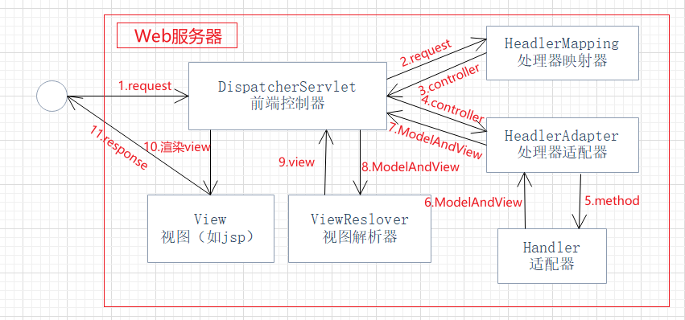
DispatcherServlet在代码编译时，将所有的controller类和类中的方法以键值对【uri，类和方法】的方式存储起来，当用户通过客户端向服务器发送请求，DispatcherServlet会拦截请求，通过请求路径中的uri找到controller类和方法，通过映射的方式获取方法的参数类型和参数名称，并根据参数名称匹配请求中的数据，经过格式转换，并通过方法对象Method的invoke(Object obj, Object... args) 方法，执行uri指向的方法，DispatcherServlet根据返回结果来确定相应客户端的是页面还是数据，若是页面则根据结果渲染页面并展示，若是数据则将数据转换为json返回给客户端。
拓展：
一、URI
<1>什么是URI
URI 在电脑术语中，统一资源标识符（Uniform Resource Identifier，URI)是一个用于标识某一互联网资源名称的字符串。 该种标识允许用户对任何（包括本地和互联网）的资源通过特定的协议进行交互操作。URI由包括确定语法和相关协议的方案所定义。
Web上可用的每种资源 HTML文档、图像、视频片段、程序等 - 由一个通用资源标识符（Uniform Resource Identifier, 简称"URI"）进行定位。
<2>URI的结构组成
URI通常由三部分组成：
注意：这只是一般URI资源的命名方式，只要是可以唯一标识资源的都被称为URI，上面三条合在一起是URI的充分不必要条件
<3>URI举例
如：https://blog.csdn.net/qq_32595453/article/details/79516787
我们可以这样解释它：
注意：以上三点只不过是对实例的解释，以上三点并不是URI的必要条件，URI只是一种概念，怎样实现无所谓，只要它唯一标识一个资源就可以了。
二、URL
URL是URI的一个子集。它是Uniform Resource Locator的缩写，译为“统一资源定位 符”。
通俗地说，URL是Internet上描述信息资源的字符串，主要用在各种客户程序和服务器程序上。
采用URL可以用一种统一的格式来描述各种信息资源，包括文件、服务器的地址和目录等。URL是URI概念的一种实现方式。
URL的一般格式为(带方括号[]的为可选项)：
protocol :// hostname[:port] / path / [;parameters][?query]#fragment
URL的格式由三部分组成：
第一部分是协议(或称为服务方式)。
第二部分是存有该资源的主机IP地址(有时也包括端口号)。
第三部分是主机资源的具体地址，如目录和文件名等。
第一部分和第二部分用“://”符号隔开，
第二部分和第三部分用“/”符号隔开。
第一部分和第二部分是不可缺少的，第三部分有时可以省略。
三、URI和URL之间的区别
从上面的例子来看，你可能觉得URI和URL可能是相同的概念，其实并不是，URI和URL都定义了资源是什么，但URL还定义了该如何访问资源。URL是一种具体的URI，它是URI的一个子集，它不仅唯一标识资源，而且还提供了定位该资源的信息。URI 是一种语义上的抽象概念，可以是绝对的，也可以是相对的，而URL则必须提供足够的信息来定位，是绝对的。
DispatcherServlet
DispatcherServlet全名是
org.springframework.web.servlet.DispatcherServlet,它在程序中充当着前端控制器的角色。在使用时，只需将它配置在项目的web.xml文件中即可
web.xml
321 2<web-app xmlns:xsi="http://www.w3.org/2001/XMLSchema-instance"3 xmlns="http://xmlns.jcp.org/xml/ns/javaee"4 xsi:schemaLocation="http://xmlns.jcp.org/xml/ns/javaee http://xmlns.jcp.org/xml/ns/javaee/web-app_3_1.xsd"5 id="WebApp_ID" version="3.1">6 <display-name>ch</display-name>7 <servlet>8 <servlet-name>springmvc</servlet-name>9 <servlet-class>org.springframework.web.servlet.DispatcherServlet</servlet-class>10 <!-- 初始化springMVC时加载的配置文件 -->11 <init-param>12 <param-name>contextConfigLocation</param-name>13 <param-value>14 classpath:springmvc-config.xml15 </param-value>16 </init-param>17 <!-- 项目启动就开始加载servlet -->18 <load-on-startup>1</load-on-startup>19 </servlet>20 <servlet-mapping>21 <servlet-name>springmvc</servlet-name>22 <url-pattern>/</url-pattern>23 </servlet-mapping>24 <welcome-file-list>25 <welcome-file>index.html</welcome-file>26 <welcome-file>index.htm</welcome-file>27 <welcome-file>index.jsp</welcome-file>28 <welcome-file>default.html</welcome-file>29 <welcome-file>default.htm</welcome-file>30 <welcome-file>default.jsp</welcome-file>31 </welcome-file-list>32</web-app>Controller注解类型
org.springframework.stereotype.Controller注解类型用于指示Spring类的实例是一个控制器，其注解形式为@Controller。该注解在使用时不需要在实现Controller接口，只需要将@Controller注解加入到控制器类上，然后通过Spring的扫描机制找到标注了该注解的控制器即可。
RequestMapping 注解
Spring 通过
@Controller注解找到相应的控制器类后，还要知道控制器内部对每个请求的是如何处理的，这就用到org.springframework.web.bind.annotation.RequestMapping注解类型用于映射一个请求或一个方法，其注解形式为@RequestMapping，可以使用该注解标注在一个方法或一个类上。
属性
value：默认属性，用于映射一种请求和一种方法，在类和方法上的value拼接就是方法的uri
method：用于指定该方法处理哪种请求方式，请求方式包括GET、POST、HEAD、OPTIONS、PUT、PATCH、DELETE和TRACE，例：method=RequestMethod.GET，多种请求方式用{}写成数组的形式
组合注解
用于替代单个请求方式的@RequestMapping
@GetMapping：匹配GET方式的请求
@PostMapping：匹配POST方式的请求
@PutMapping：匹配PUT方式的请求
@DeleteMapping：匹配DELETE方式的请求
@PatchMapping：匹配PATCH方式的请求
参数类型
返回类型
参数类型注意事项
返回类型注意事项
ModelAndView返回类型：
String返回类型有三种处理方式：
在方法加@responseBody注解返回类型自动转换为json数据，这种方式需要导入json的转换包
视图解析器
我们的springmvc的入门程序中，String返回类型的返回值和ModelAndView返回类型的viewName属性的值都不是全部的路径，那是因为我们在springmvc-config.xml中配置了视图解析器
71<bean2 class="org.springframework.web.servlet.view.InternalResourceViewResolver">3 <!-- 配置从项目根目录到指定目录一端路径 ,建议指定浅一点的目录 -->4 <property name="prefix" value="/WEB-INF/jsp/"></property>5 <!-- 文件的后缀名 -->6 <property name="suffix" value=".jsp"></property>7</bean>它会自动帮我们拼接路径，即真实路径=前缀+返回路径+后缀
在配置了DispatcherServlet之后所有的资源都必须经过它，这会导致我们的静态资源html、css、js、img等等都会被拦截，导致使用非常不方便
解放方式：在springmvc-config.xml中配置
31<!-- location：定位本地静态资源文件路径，具体到某个文件夹 -->2<!-- mapping：匹配静态资源全路径，可以使用通配符，全部文件是"/**" -->3<mvc:resources location="/" mapping="/*.html"/>在一般情况下，使用基本数据类型和pojo类型的参数数据已经能够满足需求，然而有些特殊类型的参数是无法在后台进行直接转换的，例如时间类型就需要开发者自定义转换器
Converter
定义Converter类要实现org.springframework.core.convert.converter.Converter接口，该接口代码如下
31public interface Converter<S, T> {2 T convert(S source);3}泛型中的S表示原类型，T标识目标类型，而convert(S source)表示接口中的方法。
com.systop.convert.DateConvert
241package com.systop.convert;23import java.text.ParseException;4import java.text.SimpleDateFormat;5import java.util.Date;67import org.springframework.core.convert.converter.Converter;89public class DateConvert implements Converter<String, Date> {1011 private String datePattern = "yyyy-MM-dd HH:mm:ss";12 13 public Date convert(String source) {14 SimpleDateFormat sdf = new SimpleDateFormat(datePattern);15 Date day = null;16 try {17 day = sdf.parse(source);18 } catch (ParseException e) {19 throw new IllegalArgumentException("ÎÞЧÈÕÆÚ");20 }21 return day;22 }2324}springmvc-config.xml
441 2<beans xmlns="http://www.springframework.org/schema/beans"3 xmlns:xsi="http://www.w3.org/2001/XMLSchema-instance" 4 xmlns:p="http://www.springframework.org/schema/p"5 xmlns:context="http://www.springframework.org/schema/context"6 xmlns:mvc="http://www.springframework.org/schema/mvc" 7 xmlns:task="http://www.springframework.org/schema/task"8 xsi:schemaLocation="http://www.springframework.org/schema/beans 9 http://www.springframework.org/schema/beans/spring-beans-4.2.xsd 10 http://www.springframework.org/schema/context 11 http://www.springframework.org/schema/context/spring-context-4.2.xsd 12 http://www.springframework.org/schema/mvc 13 http://www.springframework.org/schema/mvc/spring-mvc-4.2.xsd 14 http://www.springframework.org/schema/task 15 http://www.springframework.org/schema/task/spring-task-4.2.xsd">1617 <!-- 注解扫包！ -->18 <context:component-scan base-package="com.systop.controller" />19 20 <!-- 静态资源 -->21 <mvc:resources location="/" mapping="/*.html"/>22 <mvc:resources location="/js/" mapping="/js/**"/>23 24 <!-- 试图解析器 -->25 <bean26 class="org.springframework.web.servlet.view.InternalResourceViewResolver">27 <!-- 配置从项目根目录到指定目录一端路径 ,建议指定浅一点的目录 -->28 <property name="prefix" value="/WEB-INF/jsp/"></property>29 <!-- 文件的后缀名 -->30 <property name="suffix" value=".jsp"></property>31 </bean>32 33 <!-- 手动装配自定义类型的转换器 -->34 <mvc:annotation-driven conversion-service="conversionService" />35 <!-- 配置日期转换器 -->36 <bean id="conversionService" 37 class="org.springframework.context.support.ConversionServiceFactoryBean">38 <property name="converters">39 <set>40 <bean class="com.systop.convert.DateConvert"/>41 </set>42 </property>43 </bean>44</beans>在配置文件中配置自定义的转换器即可
Spring MVC 中的拦截器（Interceptor）类似于Servlet中的过滤器（Filter），它主要用于拦截用户请求并做相应的处理。例如通过拦截器可以进行权限验证、记录请求信息的日志、判断用户是否登录等等
定义拦截器有两种方式：
以实现HandlerInterceptor接口为例
311package com.systop.interceptor;23import javax.servlet.http.HttpServletRequest;4import javax.servlet.http.HttpServletResponse;56import org.springframework.web.servlet.HandlerInterceptor;7import org.springframework.web.servlet.ModelAndView;89public class CostomInterceptor implements HandlerInterceptor {1011 12 public boolean preHandle(HttpServletRequest arg0, HttpServletResponse arg1, Object arg2) throws Exception {13 // TODO Auto-generated method stub14 return false;15 }1617 18 public void postHandle(HttpServletRequest arg0, HttpServletResponse arg1, Object arg2, ModelAndView arg3)19 throws Exception {20 // TODO Auto-generated method stub21 22 }23 24 25 public void afterCompletion(HttpServletRequest arg0, HttpServletResponse arg1, Object arg2, Exception arg3)26 throws Exception {27 // TODO Auto-generated method stub28 29 }3031}preHandle()方法：该方法会在控制器方法执行之前执行，其返回值表示是否中断后续的操作。当其返回值为true时，表示继续向下执行；当其返回值为false时，会中断后续的所有操作（包括调用下一个拦截器和控制器类中的方法执行等），可以通过此方法进行数据验证，权限审查等。
postHandle()方法：该方法会在控制器方法调用之后，且解析视图之前执行。可以通过此方法对请求域中的模型和视图做出进一步的修改。
afterCompletion()方法：该方法会在整个请求完成，即视图渲染结束之后执行。可以通过此方法实现一些资源清理、记录日志信息等工作。
在springmvc-config.xml中添加
101<mvc:interceptors>2 <mvc:interceptor>3 <!-- 配置拦截器作用路径 -->4 <mvc:mapping path="/**"/>5 <!-- 配置放行路径 -->6 <mvc:exclude-mapping path=""/>7 <!-- 配置拦截器 -->8 <bean class="com.systop.interceptor.CostomInterceptor" />9 </mvc:interceptor>10</mvc:interceptors>注：每个mvc:interceptor标签下的配置必须按照mvc:mapping -> mvc:exclude-mapping -> bean的顺序配置，不然就会报错
拦截器的执行顺序
<一> 单个拦截器
preHeadle() --return true--> controller ---> postHandle() ---> DispatcherServlet ---> afterCompletion()
先执行拦截器中的praHeadle()的方法，返回值为true时，执行controller类中的逻辑方法，在之后指向拦截器的postHeadle()方法，再到DispatcherServlet的数据处理，最后执行拦截器afterCompletion()方法，结束
<二>多个拦截器
preHeadle1() ---> preHeadle2() ---> controller ---> postHandle2() ---> postHandle1() ---> DispatcherServlet ---> afterCompletion2() ---> afterCompletion1()
多个拦截器按照在springmvc-config.xml中配置的先后顺序，先从前到后执行preHeadle()方法，全部返回true之后，执行controller类中的逻辑方法，在从后到前执行postHandle()方法，在通过DispatcherServlet处理数据，最后在从后到前执行afterCompletion()方法，可以参考数据结构中的先入栈后出栈逻辑
文件的上传与下载，本质上就是二进制流的传输
文件的上传需要有一个文件上传的表单：
41<from action="" method="post" enctype="multipart/form-data">2 <input type="file" name="filename" multiple="multiple"/>3 <input type="submit" value="文件上传"/>4</from>当客户端 from 表单的 enctype 属性为 multipart/form-data 时，浏览器就会采用二进制流的方式来处理表单数据，服务器端就会对文件上传的请求进行解析处理。
Spring MVC 为文件上传提供了直接的支持，这种支持是通过MultipartResolver(多部件解析器)对象实现的。而我们只需要在springmvc-config.xml配置文件中定义它的Bean即可
121<!-- 上传解析器 -->2<bean id="multipartResolver"3 class="org.springframework.web.multipart.commons.CommonsMultipartResolver">4 <!-- 设置编码格式 -->5 <property name="defaultEncoding" value="UTF-8"/>6 <!-- 设置最大上传长度，单位是字节(Btye) -->7 <property name="maxUploadSize" value="5242880"/><!-- 5M -->8 <!-- 设置最大缓存长度，单位是字节(Btye) -->9 <property name="maxInMemorySize" value="1048576"/><!-- 1M -->10 <!-- 设置推迟文件解析，以便在Controller中捕获文件大小异常 -->11 <property name="resolveLazily" value="true"/><!-- 默认为false -->12</bean>文件的下载就是将文件服务器上的文件下载到本机上
在客户端页面上我们需要有一个文件下载的超链接，该链接的href属性指定后台文件的方法以及文件名
11<a href="${pageContext.request.contextPath}/download?filename=1.jpg">文件下载</a>编写一个简单的上传下载系统
jar包
ant-1.9.6.jar
ant-launcher-1.9.6.jar
asm-5.1.jar
aspectjweaver-1.8.10.jar
cglib-3.2.4.jar
commons-dbcp2-2.1.1.jar
commons-fileupload-1.3.2.jar
commons-io-2.5.jar
web.xml
471 2<web-app xmlns:xsi="http://www.w3.org/2001/XMLSchema-instance" xmlns="http://xmlns.jcp.org/xml/ns/javaee" xsi:schemaLocation="http://xmlns.jcp.org/xml/ns/javaee http://xmlns.jcp.org/xml/ns/javaee/web-app_3_1.xsd" id="WebApp_ID" version="3.1">3 <display-name>ch13</display-name>4 <!-- 解决中文乱码问题 -->5 <filter>6 <filter-name>encoding</filter-name>7 <filter-class>8 org.springframework.web.filter.CharacterEncodingFilter9 </filter-class>10 <init-param>11 <param-name>encoding</param-name>12 <param-value>UTF-8</param-value>13 </init-param>14 </filter>15 <filter-mapping>16 <filter-name>encoding</filter-name>17 <url-pattern>/*</url-pattern>18 </filter-mapping>19 <!-- servlet -->20 <servlet>21 <servlet-name>springmvc</servlet-name>22 <servlet-class>23 org.springframework.web.servlet.DispatcherServlet24 </servlet-class>25 <!-- 初始化参数 -->26 <init-param>27 <param-name>contextConfigLocation</param-name>28 <param-value>classpath:springmvc-config.xml</param-value>29 </init-param>30 <!-- 项目加载就要启动 -->31 <load-on-startup>1</load-on-startup>32 </servlet>33 <!-- servlet映射 -->34 <servlet-mapping>35 <servlet-name>springmvc</servlet-name>36 <url-pattern>/</url-pattern>37 </servlet-mapping>38 39 <welcome-file-list>40 <welcome-file>index.html</welcome-file>41 <welcome-file>index.htm</welcome-file>42 <welcome-file>index.jsp</welcome-file>43 <welcome-file>default.html</welcome-file>44 <welcome-file>default.htm</welcome-file>45 <welcome-file>default.jsp</welcome-file>46 </welcome-file-list>47</web-app>spingmvc-config.xml
411 2<beans xmlns="http://www.springframework.org/schema/beans"3 xmlns:xsi="http://www.w3.org/2001/XMLSchema-instance" 4 xmlns:p="http://www.springframework.org/schema/p"5 xmlns:context="http://www.springframework.org/schema/context"6 xmlns:mvc="http://www.springframework.org/schema/mvc" 7 xmlns:task="http://www.springframework.org/schema/task"8 xsi:schemaLocation="http://www.springframework.org/schema/beans 9 http://www.springframework.org/schema/beans/spring-beans-4.2.xsd 10 http://www.springframework.org/schema/context 11 http://www.springframework.org/schema/context/spring-context-4.2.xsd 12 http://www.springframework.org/schema/mvc 13 http://www.springframework.org/schema/mvc/spring-mvc-4.2.xsd 14 http://www.springframework.org/schema/task 15 http://www.springframework.org/schema/task/spring-task-4.2.xsd">1617 <!-- 注解扫包！ -->18 <context:component-scan base-package="com.systop.controller" />19 20 <!-- 静态资源 -->21 <mvc:resources location="/js/" mapping="/js/**"/>22 23 <!-- 试图解析器 -->24 <bean25 class="org.springframework.web.servlet.view.InternalResourceViewResolver">26 <!-- 配置从项目根目录到指定目录一端路径 ,建议指定浅一点的目录 -->27 <property name="prefix" value="/WEB-INF/jsp/"></property>28 <!-- 文件的后缀名 -->29 <property name="suffix" value=".jsp"></property>30 </bean>31 32 <!-- 手动装配自定义类型的转换器 -->33 <mvc:annotation-driven/>34 35 <bean id="multipartResolver"36 class="org.springframework.web.multipart.commons.CommonsMultipartResolver">37 <property name="defaultEncoding" value="UTF-8"/>38 <property name="maxUploadSize" value="1024000"></property>39 </bean>40 41</beans>/WEB-INF/jsp/upload.jsp
321<% page language="java" contentType="text/html; charset=UTF-8"2 pageEncoding="UTF-8"%>3<html>5<head>6<meta http-equiv="Content-Type" content="text/html; charset=UTF-8">7<title>Insert title here</title>8<script type="text/javascript">9 function check(){10 var name = document.getElementById("name").value;11 var filename = document.getElementById("uploadfile").value;12 if(name == ""){13 alert("请填写上传人");14 return false;15 }16 if(filename == "" || filename.length == 0){17 alert("请选择文件");18 return false;19 }20 return true;21 }22</script>23</head>24<body>25 <form action="${pageContext.request.contextPath }/upload" enctype="multipart/form-data" method="post" onsubmit="check()">26 上传人<input type="text" id="name" name="name"/><br/>27 上传文件<input type="file" name="uploadfile" id="uploadfile"/>28 <!-- <input type="file" name="uploadfile" id="uploadfile" multiple="multiple"/> -->29 <input type="submit" value="上传" />30 </form>31</body>32</html>com.systop.controller.FileController.java
891package com.systop.controller;23import java.io.File;4import java.net.URLEncoder;5import java.util.UUID;67import javax.servlet.http.HttpServletRequest;89import org.apache.commons.io.FileUtils;10import org.springframework.http.HttpHeaders;11import org.springframework.http.HttpStatus;12import org.springframework.http.MediaType;13import org.springframework.http.ResponseEntity;14import org.springframework.stereotype.Controller;15import org.springframework.web.bind.annotation.GetMapping;16import org.springframework.web.bind.annotation.PostMapping;17import org.springframework.web.bind.annotation.RequestMapping;18import org.springframework.web.bind.annotation.RequestMethod;19import org.springframework.web.bind.annotation.RequestParam;20import org.springframework.web.multipart.MultipartFile;2122public class FileController {2425 ("/upload")26 public String toUpload() {27 return "upload";28 }29 30 ("/upload")31 public String upload(("name") String name, ("uploadfile") MultipartFile uploadfile,HttpServletRequest request) {32 //文件的原始名称33 String originalFilename = uploadfile.getOriginalFilename();34 //查找项目中是否有upload路径35 String path = request.getServletContext().getRealPath("/upload");36 //新建file文件37 File filepath = new File(path);38 if(!filepath.exists()) {39 filepath.mkdirs();40 }41 //生成新的名字42 String newFileName = name+"_"+UUID.randomUUID() + "_"+originalFilename;43 try {44 //使用MultipartFile类transferTo方法上传参数是个文件filepath+newFileName==/upload/xxx_1.txt45 uploadfile.transferTo(new File(filepath+"/"+newFileName));46 } catch (Exception e) {47 // TODO 自动生成的 catch 块48 e.printStackTrace();49 return "index";50 }51 return "index";52 }53 54 ("/download")55 public String download() {56 return "download";57 }58 59 (value="/todownload",method=RequestMethod.GET)60 public ResponseEntity<byte []> fileDownload(HttpServletRequest request,String filename) throws Exception {61 //找到文件的路径62 String path = request.getServletContext().getRealPath("/upload");63 //根据文件的路径和文件名找到该文件64 File file = new File(path + File.separator + filename);65 //解决中文乱码问题66 filename = this.getFilename(request, filename);67 //设置头信息68 HttpHeaders headers = new HttpHeaders();69 //通知浏览器以下载的方式打开文件70 headers.setContentDispositionFormData("attachment", filename);71 //定义一流方式下载文件72 headers.setContentType(MediaType.APPLICATION_OCTET_STREAM);73 //使用spring mvc框架提供的ResponseEntity返回下载数据，第一个参数是字节，第二个参数头信息，第三个参数是状态74 return new ResponseEntity<byte []>(FileUtils.readFileToByteArray(file),headers,HttpStatus.OK);75 }76 77 78 public String getFilename(HttpServletRequest request, String fileName) throws Exception {79 String [] IEBrowserKeyWords = {"MSIE","Trident","Edge"};80 String userAgent = request.getHeader("User-Agent");81 for (String keywords : IEBrowserKeyWords) {82 if(userAgent.contains(keywords)) {83 return URLEncoder.encode(fileName,"UTF-8");84 }85 }86 //87 return new String(fileName.getBytes("UTF-8"),"ISO-8859-1");88 }89}/WEB-INF/jsp/download.jsp
161<% page language="java" contentType="text/html; charset=utf-8"2 pageEncoding="utf-8"%>3<% page import="java.net.URLEncoder" %>4<html>6<head>7<meta http-equiv="Content-Type" content="text/html; charset=utf-8">8<title>Insert title here</title>9</head>10<body>11 <a href="${pageContext.request.contextPath }/todownload?filename=<%=URLEncoder.encode("Spring框架技术_15.docx","UTF-8")%>">下载中文文件</a>12 <a href="${pageContext.request.contextPath }/todownload?filename=1.txt">下载英文文件</a>13 <a href="${pageContext.request.contextPath }/todownload?filename=<%=URLEncoder.encode("购物车.jpg","UTF-8")%>">下载中文图片</a>14 <a href="${pageContext.request.contextPath }/file/car.jpg">下载英文图片</a>15</body>16</html>需要注意的是，上传的文件不是在项目中的目录下，而是在项目的发布路径中
SpringMVC是Spring的子模块，不存在整合问题，因此SSM框架整合只涉及到Spring与MyBatis的整合，以及SpringMVC与MyBatis的整合
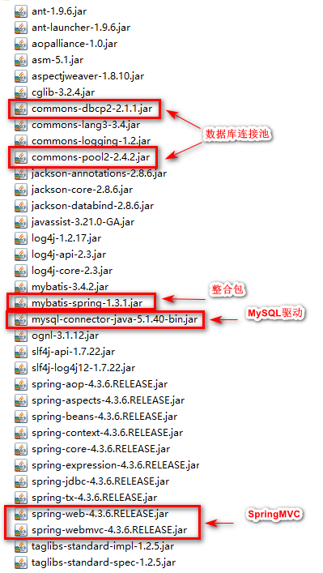
或maven项目的pom.xml文件
1631<project xmlns="http://maven.apache.org/POM/4.0.0" xmlns:xsi="http://www.w3.org/2001/XMLSchema-instance"2 xsi:schemaLocation="http://maven.apache.org/POM/4.0.0 http://maven.apache.org/xsd/maven-4.0.0.xsd">3 <modelVersion>4.0.0</modelVersion>4 <groupId>cn.wisdsoft</groupId>5 <artifactId>maven_ssm</artifactId>6 <version>0.0.1-SNAPSHOT</version>7 <packaging>war</packaging>89 <properties>10 <project.build.sourceEncoding>UTF-8</project.build.sourceEncoding>11 <spring.version>4.3.6.RELEASE</spring.version>12 <mybatis.version>3.4.1</mybatis.version>13 <spring-mybatis.version>1.3.1</spring-mybatis.version>14 <aspectj.version>1.9.1</aspectj.version>15 <aopalliance.version>1.0</aopalliance.version>16 </properties>1718 <dependencies>19 <!-- spring核心包 -->20 <dependency>21 <groupId>org.springframework</groupId>22 <artifactId>spring-context</artifactId>23 <version>${spring.version}</version>24 </dependency>25 <dependency>26 <groupId>org.springframework</groupId>27 <artifactId>spring-jdbc</artifactId>28 <version>${spring.version}</version>29 </dependency>3031 <!-- spring web核心包 -->32 <dependency>33 <groupId>org.springframework</groupId>34 <artifactId>spring-web</artifactId>35 <version>${spring.version}</version>36 </dependency>37 <!-- spring MVC核心包 -->38 <dependency>39 <groupId>org.springframework</groupId>40 <artifactId>spring-webmvc</artifactId>41 <version>${spring.version}</version>42 </dependency>43 <!-- spring 事务 -->44 <dependency>45 <groupId>org.springframework</groupId>46 <artifactId>spring-tx</artifactId>47 <version>${spring.version}</version>48 </dependency>49 <!-- 事务切面包 -->50 <dependency>51 <groupId>org.springframework</groupId>52 <artifactId>spring-aspects</artifactId>53 <version>${spring.version}</version>54 </dependency>55 <dependency>56 <groupId>org.aspectj</groupId>57 <artifactId>aspectjweaver</artifactId>58 <version>${aspectj.version}</version>59 </dependency>60 <dependency>61 <groupId>aopalliance</groupId>62 <artifactId>aopalliance</artifactId>63 <version>${aopalliance.version}</version>64 </dependency>65 <!-- 日志 -->66 <dependency>67 <groupId>log4j</groupId>68 <artifactId>log4j</artifactId>69 <version>1.2.17</version>70 </dependency>71 <dependency>72 <groupId>org.apache.logging.log4j</groupId>73 <artifactId>log4j-api</artifactId>74 <version>2.3</version>75 </dependency>76 <dependency>77 <groupId>org.apache.logging.log4j</groupId>78 <artifactId>log4j-core</artifactId>79 <version>2.3</version>80 </dependency>81 <dependency>82 <groupId>org.slf4j</groupId>83 <artifactId>slf4j-api</artifactId>84 <version>1.7.22</version>85 </dependency>86 <dependency>87 <groupId>org.slf4j</groupId>88 <artifactId>slf4j-log4j12</artifactId>89 <version>1.7.22</version>90 <scope>test</scope>91 </dependency>92 <!-- 连接池 -->93 <dependency>94 <groupId>org.apache.commons</groupId>95 <artifactId>commons-dbcp2</artifactId>96 <version>2.1.1</version>97 </dependency>98 <dependency>99 <groupId>org.apache.commons</groupId>100 <artifactId>commons-pool2</artifactId>101 <version>2.4.2</version>102 </dependency>103 <!-- mysql驱动 -->104 <dependency>105 <groupId>mysql</groupId>106 <artifactId>mysql-connector-java</artifactId>107 <version>5.1.40</version>108 </dependency>109 <!-- mybatis核心包 -->110 <dependency>111 <groupId>org.mybatis</groupId>112 <artifactId>mybatis</artifactId>113 <version>${mybatis.version}</version>114 </dependency>115 <!-- mybatis-spring整合包 -->116 <dependency>117 <groupId>org.mybatis</groupId>118 <artifactId>mybatis-spring</artifactId>119 <version>${spring-mybatis.version}</version>120 </dependency>121 <!-- 其他 -->122 <dependency>123 <groupId>ognl</groupId>124 <artifactId>ognl</artifactId>125 <version>3.1.12</version>126 </dependency>127 <dependency>128 <groupId>cglib</groupId>129 <artifactId>cglib</artifactId>130 <version>3.2.4</version>131 </dependency>132 <dependency>133 <groupId>org.ow2.asm</groupId>134 <artifactId>asm</artifactId>135 <version>5.1</version>136 </dependency>137 <dependency>138 <groupId>javax.servlet</groupId>139 <artifactId>servlet-api</artifactId>140 <version>2.5</version>141 <scope>provided</scope>142 </dependency>143 <dependency>144 <groupId>javax.servlet.jsp</groupId>145 <artifactId>jsp-api</artifactId>146 <version>2.2</version>147 <scope>provided</scope>148 </dependency>149 </dependencies>150 <build>151 <plugins>152 <plugin>153 <groupId>org.apache.tomcat.maven</groupId>154 <artifactId>tomcat7-maven-plugin</artifactId>155 <version>2.2</version>156 <configuration>157 <port>8081</port>158 <path>/</path>159 </configuration>160 </plugin>161 </plugins>162 </build>163</project>创建一个新的源文件夹resources，在里面创建配置文件
db.properties
141# 数据库链接2jdbc.driver=com.mysql.jdbc.Driver3# 数据库地址，解决中文乱码4jdbc.url=jdbc:mysql://localhost:3306/swgds?characterEncoding=UTF-85# 用户名6jdbc.username=root7# 密码8jdbc.password=root9# 最大连接数10jdbc.maxTotal=3011# 最大空闲连接数12jdbc.maxIdle=1013# 初始连接数14jdbc.initialSize=5log4j.properties
81# Global logging configuration2log4j.rootLogger=DEBUG, stdout3# MyBatis logging configuration...4log4j.logger.cn.wisdsoft.swg=DEBUG5# Console output...6log4j.appender.stdout=org.apache.log4j.ConsoleAppender7log4j.appender.stdout.layout=org.apache.log4j.PatternLayout8log4j.appender.stdout.layout.ConversionPattern=%5p [%t] - %m%napplicationContext.xml
641 2<beans xmlns="http://www.springframework.org/schema/beans"3 xmlns:xsi="http://www.w3.org/2001/XMLSchema-instance"4 xmlns:aop="http://www.springframework.org/schema/aop"5 xmlns:tx="http://www.springframework.org/schema/tx"6 xmlns:context="http://www.springframework.org/schema/context"7 xsi:schemaLocation="http://www.springframework.org/schema/beans 8 http://www.springframework.org/schema/beans/spring-beans-4.3.xsd9 http://www.springframework.org/schema/aop10 http://www.springframework.org/schema/aop/spring-aop-4.3.xsd11 http://www.springframework.org/schema/context12 http://www.springframework.org/schema/context/spring-context-4.3.xsd13 http://www.springframework.org/schema/tx14 http://www.springframework.org/schema/tx/spring-tx-4.3.xsd">15 16 <!-- 开启注解 -->17 <context:annotation-config />18 19 <!-- 扫包 -->20 <context:component-scan base-package="cn.wisdsoft.swg.service" />21 22 <!-- 读取db.properties -->23 <context:property-placeholder location="classpath:db.properties"/>24 25 <!-- 数据源 -->26 <bean id="dataSource" class="org.apache.commons.dbcp2.BasicDataSource">27 <!-- 数据库驱动 -->28 <property name="driverClassName" value="${jdbc.driver}" />29 <!-- 数据库连接地址 -->30 <property name="url" value="${jdbc.url}" />31 <!-- 数据库连接的用户名 -->32 <property name="username" value="${jdbc.username}" />33 <!-- 数据库连接的密码 -->34 <property name="password" value="${jdbc.password}" />35 <!-- 最大连接数 -->36 <property name="maxTotal" value="${jdbc.maxTotal}" />37 <!-- 最大空闲数 -->38 <property name="maxIdle" value="${jdbc.maxIdle}" />39 <!-- 初始化连接数 -->40 <property name="initialSize" value="${jdbc.initialSize}" />41 </bean>42 43 <!-- 事务管理器 -->44 <bean id="transactionManager" 45 class="org.springframework.jdbc.datasource.DataSourceTransactionManager">46 <property name="dataSource" ref="dataSource" />47 </bean>48 49 <!-- 注解方式配置事务 -->50 <tx:annotation-driven transaction-manager="transactionManager"/>51 52 <!-- 配置mybatis工厂 -->53 <bean id="sqlSessionFactory" 54 class="org.mybatis.spring.SqlSessionFactoryBean">55 <property name="dataSource" ref="dataSource" />56 <property name="configLocation" value="classpath:mybatis-config.xml"></property>57 </bean>58 59 <!--配置加载Mapper代理-->60 <bean class="org.mybatis.spring.mapper.MapperScannerConfigurer">61 <!-- 扫描mapper所在的包 -->62 <property name="basePackage" value="cn.wisdsoft.swg.mapper"/>63 </bean>64</beans>mybatis-config.xml
91 2 4<configuration>5 <!-- 起别名 -->6 <typeAliases>7 <package name="cn.wisdsoft.swg.pojo"/>8 </typeAliases>9</configuration>springmvc-config.xml
351 2<beans xmlns="http://www.springframework.org/schema/beans"3 xmlns:xsi="http://www.w3.org/2001/XMLSchema-instance" xmlns:p="http://www.springframework.org/schema/p"4 xmlns:context="http://www.springframework.org/schema/context"5 xmlns:mvc="http://www.springframework.org/schema/mvc" xmlns:task="http://www.springframework.org/schema/task"6 xsi:schemaLocation="http://www.springframework.org/schema/beans 7 http://www.springframework.org/schema/beans/spring-beans-4.2.xsd 8 http://www.springframework.org/schema/context 9 http://www.springframework.org/schema/context/spring-context-4.2.xsd 10 http://www.springframework.org/schema/mvc 11 http://www.springframework.org/schema/mvc/spring-mvc-4.2.xsd 12 http://www.springframework.org/schema/task 13 http://www.springframework.org/schema/task/spring-task-4.2.xsd">1415 <!-- 扫描内容 -->16 <context:component-scan base-package="cn.wisdsoft.swg.controller" />17 <context:component-scan base-package="cn.wisdsoft.swg.api" />18 <!-- 开启注解配置 -->19 <mvc:annotation-driven />2021 <!-- 配置静态资源的访问映射，此配置中的文件，将不被前端控制器拦截 -->22 <mvc:resources location="/js/" mapping="/js/**" />23 <mvc:resources location="/images/" mapping="/images/**" />24 <mvc:resources location="/css/" mapping="/css/**" />25 <mvc:resources location="/html/" mapping="/html/**" />2627 <!-- 视图解析器 -->28 <bean id="viewResolver"29 class="org.springframework.web.servlet.view.InternalResourceViewResolver">30 <!-- 前缀 -->31 <property name="prefix" value="/WEB-INF/jsp/" />32 <!-- 后缀 -->33 <property name="suffix" value=".jsp" />34 </bean>35</beans>web.xml
461 2<web-app xmlns:xsi="http://www.w3.org/2001/XMLSchema-instance"3 xmlns="http://xmlns.jcp.org/xml/ns/javaee"4 xsi:schemaLocation="http://xmlns.jcp.org/xml/ns/javaee http://xmlns.jcp.org/xml/ns/javaee/web-app_3_1.xsd"5 id="WebApp_ID" version="3.1">6 <display-name>swg</display-name>7 <!-- 编码集 -->8 <filter>9 <filter-name>encoding</filter-name>10 <filter-class>org.springframework.web.filter.CharacterEncodingFilter</filter-class>11 <init-param>12 <param-name>encoding</param-name>13 <param-value>UTF-8</param-value>14 </init-param>15 </filter>16 <filter-mapping>17 <filter-name>encoding</filter-name>18 <url-pattern>/*</url-pattern>19 </filter-mapping>20 <!-- spring 监听器 -->21 <context-param>22 <param-name>contextConfigLocation</param-name>23 <param-value>classpath:applicationContext.xml</param-value>24 </context-param>25 <listener>26 <listener-class>org.springframework.web.context.ContextLoaderListener</listener-class>27 </listener>28 <!-- spring mvc -->29 <servlet>30 <servlet-name>springmvc</servlet-name>31 <servlet-class>org.springframework.web.servlet.DispatcherServlet</servlet-class>32 <init-param>33 <param-name>contextConfigLocation</param-name>34 <param-value>classpath:springmvc-config.xml</param-value>35 </init-param>36 <load-on-startup>1</load-on-startup>37 </servlet>38 <servlet-mapping>39 <servlet-name>springmvc</servlet-name>40 <url-pattern>/</url-pattern>41 </servlet-mapping>4243 <welcome-file-list>44 <welcome-file>index.html</welcome-file>45 </welcome-file-list>46</web-app>到这里ssm的配置环境就搭建完毕，其中的扫描包路径请根据实际项目中的路径修改，拦截器、转换器、静态资源解放、驼峰命名法、懒加载等等，请根据需求自行设置
src下的各个实体类和接口类的编写，除mapper按照之前的方式即可
cn.wisdsoft.swg.pojo.Product.java
311package cn.wisdsoft.swg.pojo;23public class Product {4 //属性5 private Integer id;6 private String p_name;7 private Double price;8 9 //构造方法10 public Product() {}1112 //getter and setter方法13 public Integer getId() {14 return id;15 }16 public void setId(Integer id) {17 this.id = id;18 }19 public String getP_name() {20 return p_name;21 }22 public void setP_name(String p_name) {23 this.p_name = p_name;24 }25 public Double getPrice() {26 return price;27 }28 public void setPrice(Double price) {29 this.price = price;30 }31}cn.wisdsoft.swg.mapper.ProductMapper.xml
191 2 4<mapper namespace="cn.wisdsoft.swg.mapper.ProductMapper" >5 <insert id="addProduct" parameterType="product" 6 keyProperty="id" useGeneratedKeys="true">7 insert into product (p_name, price) values (#{p_name},#{price})8 </insert>9 10 <select id="findProduct" parameterType="product" resultType="product">11 select * from product where 1 = 1 12 <if test="p_name != null and p_name != ''">13 and p_name like concat('%',#{p_name},'%')14 </if>15 <if test="price != null and price != 0">16 and price = #{price}17 </if>18 </select>19</mapper>cn.wisdsoft.swg.mapper.ProductMapper.java
121package cn.wisdsoft.swg.mapper;23import java.util.List;45import cn.wisdsoft.swg.pojo.Product;67public interface ProductMapper {89 public int addProduct(Product product);10 11 public List<Product> findProduct(Product product);12}从此以后不需要再写Dao接口和它的实现类了，使用mapper.xml和mapper接口必须在同一包下，名字一致，方法名一致，参数一致，返回值一致。
cn.wisdsoft.swg.service.ProductService.java
211package cn.wisdsoft.swg.service;23import java.util.List;45import cn.wisdsoft.swg.pojo.Product;67public interface ProductService {8 /**9 * 添加方法10 * @param product 产品对象11 * @return >0表示成功12 */13 public int addProduct(Product product);14 15 /**16 * 根据条件查询列表17 * @param product 对象18 * @return 集合对象19 */20 public List<Product> findProduct(Product product);21}cn.wisdsoft.swg.service.impl.ProductServiceImpl.java
321package cn.wisdsoft.swg.service.impl;23import java.util.List;45import org.springframework.beans.factory.annotation.Autowired;6import org.springframework.stereotype.Service;7import org.springframework.transaction.annotation.Transactional;89import cn.wisdsoft.swg.mapper.ProductMapper;10import cn.wisdsoft.swg.pojo.Product;11import cn.wisdsoft.swg.service.ProductService;1213public class ProductServiceImpl implements ProductService {1617 18 private ProductMapper productMapper;19 20 21 public int addProduct(Product product) {22 int i = productMapper.addProduct(product);23 return i;24 }2526 27 public List<Product> findProduct(Product product) {28 List<Product> list = productMapper.findProduct(product);29 return list;30 }3132}cn.wisdsoft.swg.controller.LoginController.java
281package cn.wisdsoft.swg.controller;23import javax.servlet.http.HttpServletRequest;4import javax.servlet.http.HttpSession;56import org.springframework.stereotype.Controller;7import org.springframework.web.bind.annotation.GetMapping;8import org.springframework.web.bind.annotation.PostMapping;910public class LoginController {1213 ("/login")14 public String toLogin() {15 return "login";16 }17 18 ("/login")19 public String login(HttpSession session,HttpServletRequest request, String username, String userpass) {20 if (username.equals("admin") && userpass.equals("123")) {21 session.setAttribute("user_session", username);22 return "index";23 } else {24 request.setAttribute("msg", "用户名或密码错误！请重新输入！");25 return "login";26 }27 }28}cn.wisdsoft.swg.controller.ProductController.java
441package cn.wisdsoft.swg.controller;23import java.util.List;45import javax.servlet.http.HttpServletRequest;67import org.springframework.beans.factory.annotation.Autowired;8import org.springframework.stereotype.Controller;9import org.springframework.web.bind.annotation.GetMapping;10import org.springframework.web.bind.annotation.PostMapping;11import org.springframework.web.bind.annotation.RequestMapping;1213import cn.wisdsoft.swg.pojo.Product;14import cn.wisdsoft.swg.service.ProductService;1516public class ProductController {18 19 20 private ProductService productService;2122 ("/toAddProduct")23 public String toAddProduct() {24 return "saveProduct";25 }26 27 ("/addProduct")28 public String addProduct(Product product, HttpServletRequest request) {29 int i = productService.addProduct(product);30 if (i > 0) {31 return "index";32 } else {33 request.setAttribute("msg", "添加失败");34 return "saveProduct";35 }36 }37 38 ("/findProduct")39 public String findProduct(Product product, HttpServletRequest request) {40 List<Product> list = productService.findProduct(product);41 request.setAttribute("list", list);42 return "showProduct";43 }44}添加测试页面
/WEB-INF/jsp/login.jsp
161<% page language="java" contentType="text/html; charset=UTF-8"2 pageEncoding="UTF-8"%>3<html>5<head>6<meta http-equiv="Content-Type" content="text/html; charset=UTF-8">7<title>Insert title here</title>8</head>9<body>10 <form action="/swg/login" method="post">11 用户名：<input type="text" name="username" /><br/>12 密码：<input type="password" name="userpass" /><br/>13 <input type="submit" value="登录" />${msg}14 </form>15</body>16</html>/WEB-INF/jsp/index.jsp
151<% page language="java" contentType="text/html; charset=UTF-8"2 pageEncoding="UTF-8"%>3<html>5<head>6<meta http-equiv="Content-Type" content="text/html; charset=UTF-8">7<title>Insert title here</title>8</head>9<body>10 欢迎:${user_session}登录系统<br/>11 <a href="/swg/toAddProduct">添加产品信息</a><br/>12 <a href="/swg/findProduct">查看产品信息</a><br/>13 <a href="/swg/html/index.html">查看订单信息</a><br/>14</body>15</html>/WEB-INF/jsp/saveProduct.jsp
161<% page language="java" contentType="text/html; charset=UTF-8"2 pageEncoding="UTF-8"%>3<html>5<head>6<meta http-equiv="Content-Type" content="text/html; charset=UTF-8">7<title>Insert title here</title>8</head>9<body>10 <form action="/swg/addProduct" method="post">11 产品名称：<input type="text" name="p_name" /><br/>12 价格：<input type="text" name="price" /><br/>13 <input type="submit" value="添加"/>${msg}14 </form>15</body>16</html>/WEB-INF/jsp/showProduct.jsp
201<% page language="java" contentType="text/html; charset=UTF-8"2 pageEncoding="UTF-8"%>3<% taglib prefix="c" uri="http://java.sun.com/jsp/jstl/core" %>4<html>6<head>7<meta http-equiv="Content-Type" content="text/html; charset=UTF-8">8<title>Insert title here</title>9</head>10<body>11 <form action="/swg/findProduct" method="post">12 名称： <input type="text" name="p_name" />价格： <input type="text" name="price" /><input type="submit" value="搜索" /><br/>13 </form>14 15 <p>序号 产品名称 价格</p>16 <c:forEach items="${list }" var="product">17 <p>${product.id } ${product.p_name } ${product.price }</p>18 </c:forEach>19</body>20</html>数据库swgds.sql
381/*2Navicat MySQL Data Transfer34Source Server : test5Source Server Version : 505626Source Host : localhost:33067Source Database : swgds89Target Server Type : MYSQL10Target Server Version : 5056211File Encoding : 650011213Date: 2020-11-12 12:15:3814*/1516SET FOREIGN_KEY_CHECKS=0;1718-- ----------------------------19-- Table structure for orders20-- ----------------------------21DROP TABLE IF EXISTS `orders`;22CREATE TABLE `orders` (23 `id` int(11) NOT NULL AUTO_INCREMENT,24 `p_id` int(11) DEFAULT NULL,25 `total` decimal(18,4) DEFAULT NULL,26 PRIMARY KEY (`id`)27) ENGINE=InnoDB DEFAULT CHARSET=utf8;2829-- ----------------------------30-- Table structure for product31-- ----------------------------32DROP TABLE IF EXISTS `product`;33CREATE TABLE `product` (34 `id` int(11) NOT NULL AUTO_INCREMENT,35 `p_name` varchar(20) DEFAULT NULL,36 `price` decimal(18,4) DEFAULT NULL,37 PRIMARY KEY (`id`)38) ENGINE=InnoDB AUTO_INCREMENT=8 DEFAULT CHARSET=utf8;如此一个简单的ssm操作系统就完成了，但他有很大的缺点，它只有jsp页面显示动态数据，我们可以根据前端的ajax创建api接口给html页面提供数据
在src源目录下
cn.wisdsoft.swg.api.ProductController.java
261package cn.wisdsoft.swg.api;23import java.util.List;456import org.springframework.beans.factory.annotation.Autowired;7import org.springframework.stereotype.Controller;8import org.springframework.web.bind.annotation.RequestMapping;9import org.springframework.web.bind.annotation.ResponseBody;1011import cn.wisdsoft.swg.pojo.Product;12import cn.wisdsoft.swg.service.ProductService;1314public class ProductController {16 17 18 private ProductService productService;1920 ("/productlist")21 22 public List<Product> findProduct(Product product) {23 List<Product> list = productService.findProduct(product);24 return list;25 }26}在WebContent下 /html/index.html
281<html>3<head>4<meta charset="UTF-8">5<title>Insert title here</title>6<script type="text/javascript" src="/swg/js/jquery-3.3.1.js"></script>7</head>8<body>9 <div id="div"></div>10</body>11<script type="text/javascript">12 $(function(){13 $.ajax({14 url : "/swg/productlist",15 type : "get",16 //data : "",17 datatype : "json",18 success:function(result){19 console.log(result);20 for(var i = 0; i < result.length; i++) {21 $("#div").append("序号："+result[i].id+"，名称："+result[i].p_name+"，价格："+result[i].price+"<br/>");22 }23 24 }25 });26 })27</script>28</html>在WebContent下 /js/jquery-3.3.1.js
emmm，jquery.js代码太长，大家可以从网上自行搜索下载这里简单提供一个网址
跳转HTML页面
返回值为String类型，返回值前缀为"redirect:"和"forward:"
相对于"redirect:"重定向，"forward:"转发更符合地址的隐秘性
同理可得，在img等有src属性的请求路径标签，我们也可以拦截转发静态资源，隐藏真实路径
跳转
js控制跳转
ajax跨域问题
在上面springmvc的工作流程时，我们提到过浏览器的地址路径由协议(http/https)、主机地址(ipv4/ipv6/域名)、端口号(默认是80)、uri(项目+项目路径)组成
当协议、主机地址、端口号、项目任意一个不相同时，都会遇到跨域问题
跨域问题的出现是为了防止垃圾信息的请求，恶意用户的访问等等才出现的
解决跨域问题有两种：
前端请求数据类型用jsonp（没成功过，就不误人子弟了）
后台服务器项目开放权限
在我们SSM框架有一个注解@CrossOrigin，将它添加到需要开放权限的方法上，就能通过ajax请求到
API接口
在前后端分离开放的模式下，我们可以将后台控制器Ctroller和前台ajax接口API分离开来，创建一个新的api包来专门存放API接口